Bài 02: Các bài toán tối ưu lồi
Cơ sở toán học cho AI
Viện Trí tuệ nhân tạo
Năm học 2026–2027 · Học kỳ 1
Bài 01 cho tập lồi, hàm lồi, các phép toán bảo toàn tính lồi và một quy trình chứng nhận cho mô hình đã viết sẵn. Một mô hình thực tế được cho bằng một danh sách ràng buộc, có thể chứa trị tuyệt đối, cực đại, tích của các đại lượng dương hay biến nhị phân.
Câu hỏi trung tâm của Bài 02: khi nào một mô hình như vậy viết được thành một bài toán lồi tương đương thuộc một lớp đã biết, và khi không viết được, bài toán lồi thay thế cho bảo đảm gì về bài toán gốc. Kiến thức cần dùng gồm định nghĩa tập lồi và hàm lồi, điều kiện bậc hai, ma trận nửa xác định dương, bất đẳng thức tam giác và bình phương nhỏ nhất của Bài 01.
Mục tiêu học tập
Chứng nhận bài toán lồi; phân biệt "lồi" với "có nghiệm".
Lập quy hoạch tuyến tính, dạng chuẩn; chứng nhận nghiệm; dùng biến phụ.
Nhận dạng quy hoạch bậc hai; phân biệt phạt với chặn chuẩn.
Đưa tích, tỷ số đại lượng dương về quy hoạch hình học.
Phân biệt biến đổi tương đương với thay thế, phạt, nới lỏng; lấy cận bằng nới lỏng.
Áp dụng quy trình nhận dạng; chỉ ra kết luận mất khi bỏ giả thiết.
Sáu mục tiêu là minh chứng bộ phận của chuẩn đầu ra bài học (LLO) LLO3 của buổi 2, gắn với chuẩn đầu ra học phần (CLO) CLO1.
Mục tiêu 1 ứng với dạng phổ biến và ba ví dụ một biến ở phần 1; mục tiêu 2 với quy hoạch tuyến tính, dạng chuẩn, chứng nhận bằng tổ hợp không âm và biến phụ ở phần 2; mục tiêu 3 với phần 3; mục tiêu 4 với đổi biến logarit ở phần 4; mục tiêu 5 với hàm thay thế và nới lỏng ở phần 5 và số hạng phạt thay ràng buộc đếm ở phần 6; mục tiêu 6 với bảng nhận dạng, quy trình chứng nhận và biến thể giới hạn số đặc trưng ở phần 6.
Nội dung
Mô hình hóa và chứng nhận tính lồi
Quy hoạch tuyến tính
Quy hoạch bậc hai và ràng buộc bậc hai
Quy hoạch hình học
Xấp xỉ lồi và nới lỏng
Tổng hợp và vận dụng
Phần 1 lập dạng phổ biến của bài toán tối ưu lồi và khung chứng nhận từng dòng, kiểm tra trên ba hàm một biến. Phần 2 xét quy hoạch tuyến tính qua bài toán pha trộn, định nghĩa biến đổi tương đương và dùng biến phụ đưa hồi quy sai số tuyệt đối, hồi quy minimax về quy hoạch tuyến tính. Phần 3 đổi tiêu chí sang tổng bình phương phần dư, thêm số hạng phạt và ràng buộc chặn chuẩn, dẫn tới quy hoạch bậc hai và quy hoạch bậc hai có ràng buộc bậc hai.
Phần 4 xét quy hoạch hình học, không lồi theo biến ban đầu nhưng lồi sau đổi biến logarit; ví dụ chính là thiết kế hộp, phân bổ công suất là phần đọc thêm. Phần 5 xét hai cách xử lý khi không có biến đổi tương đương: hàm thay thế cho số lỗi phân loại và nới lỏng cho bài toán chọn gói nhị phân. Phần 6 gom bảng nhận dạng, quy trình chứng nhận và biến thể giới hạn số đặc trưng.
Hai bộ dữ liệu chung được dùng lại: năm quan sát hồi quy ở phần 2 và phần 3, bốn ảnh phân loại ở phần 5 (Ví dụ 02.1).
Tập lồi, hàm lồi và giá trị tối ưu
Nhu cầu: kiểm tra từng dòng của mô hình để kết luận bài toán lồi.
Nhắc lại: $C\subseteq\mathbb{R}^n$ là tập lồi khi $\vartheta x+(1-\vartheta)x'\in C$ với mọi $x,x'\in C$, $\vartheta\in[0,1]$.
$f_0:C\to\mathbb{R}$ là hàm lồi khi với mọi $x,x'\in C$, $\vartheta\in[0,1]$:
$$f_0(\vartheta x+(1-\vartheta)x')\le\vartheta f_0(x)+(1-\vartheta)f_0(x').$$
Giá trị tối ưu (optimal value) $p^*=\inf_{x\in C}f_0(x)$; nghiệm $x^*\in C$ có $f_0(x^*)=p^*$.
Ba khái niệm của Bài 01 được dùng ở mọi trang sau: tập lồi, hàm lồi và giá trị tối ưu (Định nghĩa 01.17, 01.21, 01.11). Tập $C$ lồi khi đoạn nối hai điểm bất kỳ của $C$ nằm trọn trong $C$. Hàm $f_0$ lồi khi đồ thị nằm không cao hơn dây cung nối hai điểm của đồ thị; định nghĩa này cần $C$ lồi để điểm $\vartheta x+(1-\vartheta)x'$ thuộc miền của $f_0$.
Giá trị tối ưu $p^*$ là cận dưới đúng (infimum) của các giá trị mục tiêu trên tập khả thi. Nó bằng $-\infty$ khi mục tiêu không bị chặn dưới, bằng $+\infty$ khi $C$ rỗng, và có thể hữu hạn mà không đạt tại điểm nào. Nghiệm tối ưu (optimal point) $x^*$ tồn tại khi và chỉ khi cận dưới đúng đạt được: hàm nghịch đảo trên nửa trục dương có $p^*=0$ nhưng không có $x^*$. Nguồn: Boyd và Vandenberghe (2004), Convex Optimization , §2.1.4, §3.1.1, §4.1.1 (tr. 127–128).
Bài toán tổng quát kế tiếp dùng hai định nghĩa lồi làm hai điều kiện chứng nhận.
Bài toán tối ưu lồi tổng quát
Biến quyết định $x\in\mathbb{R}^n$.
$$\min_{x\in C} f_0(x)$$
Hàm mục tiêu $f_0:C\to\mathbb{R}$ lồi.
Tập khả thi $C\subseteq\mathbb{R}^n$ lồi.
Mọi bài toán của bài có cùng dạng: chọn một vector quyết định để làm nhỏ nhất một tiêu chí, trong phạm vi các lựa chọn được phép. Để gọi bài toán là lồi, cần kiểm tra hai đối tượng: hàm mục tiêu và tập khả thi.
Biến quyết định $x\in\mathbb{R}^n$ gom $n$ đại lượng cần chọn. Tập khả thi $C$ là tập mọi lựa chọn thỏa yêu cầu của bài toán; hàm mục tiêu $f_0$ gán cho mỗi lựa chọn một giá trị cần làm nhỏ. Bài toán $\min_{x\in C}f_0(x)$ với $C$ lồi và $f_0$ lồi trên $C$ gọi là bài toán tối ưu lồi. Chứng nhận gồm hai phần; thiếu một phần thì chưa kết luận được bài toán lồi.
Tính lồi là tính chất của cấu trúc bài toán và không khẳng định có nghiệm: hàm nghịch đảo trên nửa trục dương có mục tiêu lồi, tập khả thi lồi nhưng không đạt giá trị nhỏ nhất. Nguồn: Boyd và Vandenberghe (2004), Convex Optimization , §4.2, tr. 137–138.
Tập $C$ ở đây cho một cách trừu tượng; dạng phổ biến mô tả $C$ bằng các hàm ràng buộc bất đẳng thức và một hệ phương trình tuyến tính.
Dạng phổ biến của tối ưu lồi
Định nghĩa. Bài toán tối ưu lồi dạng phổ biến là
$$\begin{aligned}
\min_{x\in\mathbb{R}^n}\;& f_0(x)\\
\text{subject to}\quad & f_i(x)\le 0,\quad i=1,\ldots,m,\\
& Ax=b,
\end{aligned}$$
với $f_0,\ldots,f_m$ lồi; $A\in\mathbb{R}^{p\times n}$, $b\in\mathbb{R}^p$.
Mệnh đề. Tập khả thi $C=\{x\mid f_i(x)\le0,\ Ax=b\}$ lồi (Mệnh đề 02.2).
Trong mô hình thực tế, tập khả thi được mô tả bằng các yêu cầu viết thành bất đẳng thức và đẳng thức. Dạng phổ biến (Định nghĩa 02.1) cố định cách viết đó sao cho mỗi dòng kiểm tra được bằng công cụ của Bài 01.
Định nghĩa 02.1 cho phép một miền lồi $D\subseteq\mathbb{R}^n$ thay cho $\mathbb{R}^n$ (các hàm xác định trên $D$, tập khả thi nằm trong $D$); trên mặt trang, miền của các hàm được hiểu ngầm và ghi trong từng ví dụ. Bài toán có $m$ ràng buộc bất đẳng thức $f_i(x)\le0$ và $p$ đẳng thức gom trong $Ax=b$; có thể $m=0$ hoặc $p=0$. Chứng minh mệnh đề: khi $f_i$ lồi, tập mức dưới (sublevel set) $\{x\mid f_i(x)\le0\}$ lồi, vì $f_i(x)\le0$ và $f_i(x')\le0$ cho $f_i(\vartheta x+(1-\vartheta)x')\le\vartheta f_i(x)+(1-\vartheta)f_i(x')\le0$. Tập nghiệm của $Ax=b$ là tập affine, nên lồi, và giao của các tập lồi là lồi. Chứng nhận gồm ba bước: $f_0$ lồi, từng $f_i$ lồi, các đẳng thức affine.
Chiều "$\le0$" và tính affine của đẳng thức là một phần của định nghĩa. Một tập lồi vẫn có thể được mô tả bằng các hàm không lồi, nên không suy ngược từ một biểu diễn sai dạng rằng tập khả thi không lồi. Boyd và Vandenberghe (2004, §4.2.1, tr. 136–137) gọi dạng này là dạng chuẩn (standard form); trong bài, "dạng chuẩn" chỉ dùng cho quy hoạch tuyến tính và quy hoạch hình học.
Ba ví dụ một biến kế tiếp áp dụng khung này cho ba tập khả thi: một đoạn đóng, toàn trục số và nửa trục dương mở.
Ví dụ: hàm bậc hai
$$\min_{0\le x\le1}\; (x-2)^2$$
Hàm bậc hai trên đoạn [0,1]
Parabol (x−2)², nét liền đậm ứng với 0≤x≤1, nét đứt ở ngoài tập khả thi. Điểm tối ưu (1,1). Thanh đoạn có hai đầu đóng.
x f₀(x) 0
1
2
3
1
4
(1, 1)
Nét đậm: phần khả thi.
Xác định tính lồi và nghiệm.
Tập khả thi $C=[0,1]$ là đoạn lồi.
$f_0''(x)=2>0$ nên $f_0$ lồi.
Kết luận: $x^*=1$, $p^*=1$.
Diễn giải: nghiệm tối ưu nằm trên biên của $C$.
Dạng phổ biến với $n=1$, hai ràng buộc bất đẳng thức và không có đẳng thức cho bài toán cực tiểu trên một đoạn (Ví dụ 02.3). Khi điểm cực tiểu tự do của hàm mục tiêu không khả thi, cần xác định nghiệm nằm ở đâu.
Đoạn $[0,1]$ viết thành hai ràng buộc affine $-x\le0$ và $x-1\le0$, nên tập khả thi lồi. Hàm mục tiêu $f_0(x)=(x-2)^2$ có $f_0''(x)=2>0$ trên $\mathbb{R}$, nên lồi chặt. Trên hình, trục hoành là $x$, trục tung là $f_0(x)$; phần parabol ứng với đoạn khả thi vẽ nét liền đậm, phần còn lại nét đứt; thanh phía dưới có hai đầu đóng biểu diễn $[0,1]$; điểm đánh dấu $(1,1)$ là nghiệm.
Chứng minh nghiệm: với $x\le1$ ta có $2-x\ge1>0$, nên $(x-2)^2\ge1$, dấu bằng chỉ khi $x=1$. Điểm $x=2$ làm $f_0$ nhỏ nhất trên $\mathbb{R}$ nhưng vi phạm $x\le1$. Tại nghiệm $f_0'(1)=-2\ne0$: điều kiện đạo hàm bằng 0 chỉ áp dụng cho cực tiểu ở điểm trong của miền. Câu hỏi: nếu đổi $C$ thành $[0,3]$ thì nghiệm thay đổi thế nào? Lời giải: điểm 2 nay khả thi, nên $x^*=2$ và $p^*=0$.
Hàm mục tiêu ở đây khả vi nên tính lồi kiểm tra được bằng đạo hàm bậc hai; ví dụ giá trị tuyệt đối bỏ giả thiết khả vi. Nguồn: Boyd và Vandenberghe (2004), Convex Optimization , §3.1.3 và §4.1.2, Ví dụ 4.2.
Ví dụ: hàm giá trị tuyệt đối
$$\min_{x\in\mathbb{R}}\; |x-2|$$
Hàm giá trị tuyệt đối trên toàn trục số
Đường chữ V của |x−2| có đỉnh (2,0). Toàn bộ trục số khả thi, biểu diễn bằng thanh có mũi tên ở hai đầu.
x f₀(x) 0
2
4
2
4
(2, 0)
Mũi tên hai đầu: $C=\mathbb{R}$.
Xác định tính lồi và nghiệm.
Tập khả thi $C=\mathbb{R}$ lồi.
$|x-2|$ lồi theo bất đẳng thức tam giác.
Kết luận: $x^*=2$, $p^*=0$.
Diễn giải: hàm mục tiêu lồi, không khả vi tại nghiệm.
Hàm bậc hai được chứng nhận lồi bằng đạo hàm bậc hai. Với cùng mốc 2, đo độ lệch bằng trị tuyệt đối và bỏ mọi ràng buộc cho một hàm mục tiêu lồi nhưng không khả vi tại nghiệm (Ví dụ 02.4).
Tập khả thi $C=\mathbb{R}$ lồi; trên hình, thanh có mũi tên ở hai đầu biểu diễn toàn trục số. Hàm $f_0(x)=|x-2|$ có đồ thị hình chữ V, đỉnh tại $(2,0)$. Tiêu chuẩn đạo hàm bậc hai không dùng được tại $x=2$, nên tính lồi được chứng minh bằng định nghĩa. Với $x,x'\in\mathbb{R}$ và $\vartheta\in[0,1]$, viết $\vartheta x+(1-\vartheta)x'-2=\vartheta(x-2)+(1-\vartheta)(x'-2)$ rồi áp dụng bất đẳng thức tam giác: $$|\vartheta x+(1-\vartheta)x'-2|\le\vartheta|x-2|+(1-\vartheta)|x'-2|.$$
Vì $|x-2|\ge0$ và dấu bằng chỉ khi $x=2$, nghiệm là $x^*=2$ với $p^*=0$. Tại điểm này đạo hàm trái bằng $-1$, đạo hàm phải bằng 1, nên hàm không khả vi đúng tại nghiệm. Câu hỏi: nếu thay $C$ bằng $[3,5]$ thì nghiệm là gì? Lời giải: trên $[3,5]$ hàm bằng $x-2$ và tăng, nên $x^*=3$, $p^*=1$. Trị tuyệt đối của độ lệch xuất hiện lại trong hồi quy sai số tuyệt đối ở phần 2.
Hai ví dụ đầu đều đạt giá trị tối ưu tại một điểm khả thi; ví dụ hàm nghịch đảo giữ mục tiêu lồi và tập khả thi lồi nhưng không có điểm nào đạt cận dưới. Nguồn: Boyd và Vandenberghe (2004), Convex Optimization , §3.1.5.
Ví dụ: hàm nghịch đảo
$$\min_{x>0}\; \frac{1}{x}$$
Hàm nghịch đảo trên miền dương
Đường 1/x luôn ở trên trục hoành và tiến sát trục khi x tăng. Thanh miền dương có đầu rỗng tại 0 và mũi tên sang phải.
x f₀(x) 1
2
4
1
2
4
0
Vòng rỗng: loại $x=0$.
Xác định tính lồi và giá trị tối ưu.
Tập khả thi $C=(0,+\infty)$ lồi.
$f_0''(x)=2/x^3>0$ trên $C$ nên $f_0$ lồi.
Kết luận: $p^*=\inf_{x>0}1/x=0$ không đạt được.
Diễn giải: bài toán lồi này không có nghiệm tối ưu.
Hàm bậc hai trên đoạn và trị tuyệt đối trên toàn trục đều có nghiệm tối ưu. Hàm nghịch đảo trên nửa trục dương là một bài toán lồi không có nghiệm (Ví dụ 02.5).
Miền của $f_0(x)=1/x$ và tập khả thi đều là $C=(0,+\infty)$, một khoảng mở nên lồi. Không được thay $x>0$ bằng $x\ge0$, vì hàm không xác định tại 0. Đạo hàm bậc hai $f_0''(x)=2/x^3$ dương trên $C$, nên bài toán lồi. Trên hình, đường cong luôn nằm trên trục hoành và tiến sát trục khi $x$ tăng; vòng rỗng tại 0 cho biết điểm 0 bị loại.
Giá trị tối ưu $p^*$ bằng 0: $1/x>0$ với mọi $x>0$, nên 0 là một cận dưới; dãy $x_k=k$ cho $1/x_k=1/k\to0$, nên không có cận dưới nào lớn hơn 0. Không có $x$ khả thi nào cho $1/x=0$, nên bài toán không có nghiệm. Bài toán vẫn bị chặn dưới; bốn trạng thái của một bài toán lồi là có nghiệm, bị chặn mà không đạt, không bị chặn dưới và không khả thi (Nhận xét 02.8). Câu hỏi: nếu thêm ràng buộc $x\le M$ với $M>0$ thì nghiệm là gì? Lời giải: $f_0$ giảm trên $(0,M]$, nên $x^*=M$ và $p^*=1/M$.
Phần 1 để lại khung chứng nhận từng dòng, cùng sự phân biệt giữa tính lồi và sự tồn tại nghiệm; phần 2 áp dụng khung này cho các mô hình nhiều biến có mục tiêu và ràng buộc affine. Nguồn: Boyd và Vandenberghe (2004), Convex Optimization , Ví dụ 4.1, tr. 128.
2. Quy hoạch tuyến tínhMuốn nhận dạng và chứng nhận nghiệm quy hoạch tuyến tính, kể cả mục tiêu chứa trị tuyệt đối.
Pha trộn nguyên liệu · dạng tổng quát · dạng chuẩn · biến phụ · biến đổi tương đương
Khung chứng nhận của phần 1 gồm mục tiêu lồi, bất đẳng thức $f_i(x)\le0$ với $f_i$ lồi, đẳng thức affine. Hàm affine vừa lồi vừa lõm, nên mọi bài toán có mục tiêu và ràng buộc affine thỏa khung đó; lớp này là quy hoạch tuyến tính (linear programming, LP). Bài toán pha trộn cho dạng tổng quát, dạng chuẩn và cách chứng nhận nghiệm bằng tổ hợp không âm các ràng buộc. Biến phụ cùng định nghĩa biến đổi tương đương đưa hồi quy sai số tuyệt đối và hồi quy minimax về quy hoạch tuyến tính; hai công cụ này được dùng lại ở phần 3 và phần 5.
Pha trộn cho một vườn ươm
Nhu cầu: nhận dạng quy hoạch tuyến tính và chứng nhận nghiệm.
Ví dụ: hỗn hợp bón đủ nitơ, phốtpho, chi phí thấp nhất.
Nguyên liệu I: nhiều nitơ, giá cao.
Nguyên liệu II: rẻ, ít nitơ.
Giả thiết: lượng mua thay đổi liên tục.
Bài toán pha trộn cần xác định ai quyết định, quyết định đại lượng nào, yêu cầu nào phải thỏa và tiêu chí nào cần làm nhỏ.
Người phụ trách vườn ươm cần một hỗn hợp bón cho một luống cây, với lượng nitơ và lượng phốtpho tối thiểu. Hai nguyên liệu tạo ra một đánh đổi: nguyên liệu I chứa nhiều nitơ hơn trong mỗi kg nhưng đắt hơn; nguyên liệu II rẻ hơn nhưng phải dùng nhiều hơn để đủ nitơ. Quyết định là số kg mỗi loại; tiêu chí là tổng chi phí. Tổng khối lượng hỗn hợp là hệ quả của quyết định, không phải một ràng buộc.
Mô hình dựa trên ba giả thiết: hàm lượng dinh dưỡng cộng được; chi phí tỷ lệ với lượng dùng; lượng mua thay đổi liên tục. Giả thiết thứ ba cho phép dùng biến thực; nếu chỉ được mua nguyên bao thì mô hình đổi lớp, như biến thể thứ hai của bài tập cuối phần. Câu hỏi: đề xuất một phương án mua ban đầu. Một đề xuất tự nhiên là chỉ mua loại II vì giá mỗi kg thấp hơn; phương án này tốn 80 nghìn đồng. Nguồn mô hình: Boyd và Vandenberghe (2004), Convex Optimization , §4.3.1, bài toán khẩu phần; Ví dụ 02.6.
Mô hình pha trộn
Nguyên liệu I II
Giá (10 nghìn đồng/kg) 3 2 Nitơ (g/kg) 2 1 Phốtpho (g/kg) 1 2
Biến: $x_1,x_2$ kg nguyên liệu I, II.
Cần ít nhất 4 g nitơ và 5 g phốtpho.
$$\begin{aligned}
\min_{x}\;& 3x_1+2x_2\\
\text{subject to}\quad & 2x_1+x_2\ge 4,\\
& x_1+2x_2\ge 5,\\
& x_1,x_2\ge 0.
\end{aligned}$$
Phương án ban đầu: chỉ dùng II, 4 kg, chi phí 80 nghìn đồng.
Tình huống vườn ươm đã xác định quyết định và tiêu chí. Mô hình gắn số liệu vào dữ liệu, biến, mục tiêu, ràng buộc và đơn vị.
Hàng giá tính theo đơn vị 10 nghìn đồng/kg: nguyên liệu I giá 3, nguyên liệu II giá 2. Hàng nitơ cho 2 g/kg và 1 g/kg; hàng phốtpho cho 1 g/kg và 2 g/kg. Biến $x_1,x_2$ là số kg nguyên liệu I và II. Tổng chi phí là $3x_1+2x_2$ (đơn vị 10 nghìn đồng), lượng nitơ $2x_1+x_2$ gam, lượng phốtpho $x_1+2x_2$ gam. Hai yêu cầu tối thiểu cho $2x_1+x_2\ge4$ và $x_1+2x_2\ge5$; lượng dùng không âm cho $x_1,x_2\ge0$. Mọi biểu thức tuyến tính theo $(x_1,x_2)$.
Phương án chỉ dùng nguyên liệu II: với $x_1=0$, nitơ đòi $x_2\ge4$, phốtpho đòi $x_2\ge2{,}5$, nên cần $x_2=4$. Chi phí $2\cdot4=8$ đơn vị, tức 80 nghìn đồng, và phốtpho thừa: $x_1+2x_2=8$ gam so với yêu cầu 5 gam. Điều quyết định là chi phí để đạt đủ cả hai yêu cầu, không phải giá mỗi kg. Phương án khả thi này cho cận trên 8 của chi phí tối ưu. Nguồn: Boyd và Vandenberghe (2004), Convex Optimization , §4.3.1.
Dạng tổng quát của quy hoạch tuyến tính
Định nghĩa. Quy hoạch tuyến tính (LP) ở dạng tổng quát (general form) là bài toán
$$\begin{aligned}
\min_{x\in\mathbb{R}^n}\;& c^Tx\\
\text{subject to}\quad & Gx\le h,\\
& Ax=b.
\end{aligned}$$
Nhắc lại: với $a\ne0$, $\{x\mid a^Tx\le\beta\}$ là nửa không gian, $\{x\mid a^Tx=\beta\}$ là siêu phẳng; giao hữu hạn của chúng là đa diện (polyhedron).
Mục tiêu $c^Tx$ affine nên lồi. Tập khả thi là đa diện nên lồi.
Mô hình pha trộn có mục tiêu và ràng buộc tuyến tính. Cấu trúc đó được khái quát thành một dạng chung (Định nghĩa 02.9), ghi rõ kích thước dữ liệu và một chứng nhận tính lồi dùng cho cả lớp.
Biến $x\in\mathbb{R}^n$; dữ liệu gồm $c\in\mathbb{R}^n$, $G\in\mathbb{R}^{m\times n}$, $h\in\mathbb{R}^m$, $A\in\mathbb{R}^{p\times n}$, $b\in\mathbb{R}^p$; bất đẳng thức $Gx\le h$ hiểu theo từng tọa độ. Hàng thứ $k$ của $Gx\le h$ xác định một nửa không gian, mỗi hàng của $Ax=b$ một siêu phẳng. Mục tiêu affine nên lồi; tập khả thi là giao hữu hạn của nửa không gian và siêu phẳng, tức một đa diện, nên lồi. Theo khung ở phần 1, mọi bài toán viết được dưới dạng này là bài toán lồi. Khi không có đẳng thức ($p=0$), dạng này gọi là dạng bất đẳng thức (inequality form).
Bài toán pha trộn đưa về dạng này bằng cách đổi dấu các ràng buộc lớn hơn hoặc bằng: $2x_1+x_2\ge4$ thành $-2x_1-x_2\le-4$, $x_1+2x_2\ge5$ thành $-x_1-2x_2\le-5$, và $x\ge0$ thành $-x\le0$. Khi đó $n=2$, $c=(3,2)$, $G$ có bốn hàng, $h=(-4,-5,0,0)$ và không có đẳng thức. Điều kiện $x\ge0$ là ràng buộc của bài toán pha trộn, không phải yêu cầu của mọi LP ở dạng tổng quát. Nguồn: Boyd và Vandenberghe (2004), Convex Optimization , §4.3, công thức (4.27), tr. 146.
Dạng tổng quát cho phép biến tự do và bất đẳng thức; dạng chuẩn chỉ dùng đẳng thức và biến không âm, và được suy ra từ dạng tổng quát bằng hai loại biến mới.
Dạng chuẩn của quy hoạch tuyến tính
Định nghĩa. Dạng chuẩn (standard form), biến $\zeta$:
$$\begin{aligned}\min_{\zeta\ge0}\;&\tilde c^T\zeta\\\text{subject to}\quad &B\zeta=\tilde b.\end{aligned}$$
Mệnh đề. Từ dạng tổng quát, đặt $\zeta=(x^+,x^-,\sigma)$:
Biến tự do: $x=x^+-x^-$, $x^+,x^-\ge 0$.
Biến bù: $Gx+\sigma=h$, $\sigma\ge 0$.
Giữ $Ax=b$; được bài toán tương đương (Mệnh đề 02.10).
Dạng tổng quát cho phép biến có dấu tùy ý và bất đẳng thức. Phương pháp đơn hình (simplex method) làm việc với dạng chuẩn: mọi ràng buộc là đẳng thức và mọi biến không âm. Mọi LP dạng tổng quát chuyển được về dạng chuẩn mà không đổi giá trị tối ưu, nhờ hai loại biến mới.
Bước 1 tách mỗi biến tự do (free variable) thành hiệu hai biến không âm, $x=x^+-x^-$. Bước 2 thêm biến bù (slack variable) $\sigma\in\mathbb R^m$, $\sigma\ge0$, đo phần chênh giữa hai vế: $Gx+\sigma=h$. Bước 3 giữ nguyên $Ax=b$. Với $\zeta=(x^+,x^-,\sigma)\in\mathbb R^{2n+m}$, $$B=\begin{bmatrix}G & -G & I_m\\ A & -A & 0\end{bmatrix},\qquad \tilde b=\begin{bmatrix}h\\ b\end{bmatrix},\qquad \tilde c=\begin{bmatrix}c\\ -c\\ 0\end{bmatrix},$$ với $B$ cỡ $(m+p)\times(2n+m)$ và $\tilde c^T\zeta=c^T(x^+-x^-)$.
Hai chiều bảo toàn: với mọi $x$ khả thi, $x^+=\max(x,0)$, $x^-=\max(-x,0)$ (theo từng thành phần) và $\sigma=h-Gx\ge0$ cho $\zeta$ khả thi cùng mục tiêu; ngược lại, mọi $\zeta$ khả thi cho $x=x^+-x^-$ thỏa $Gx\le h$, $Ax=b$, cùng mục tiêu. Vì vậy hai bài toán có cùng giá trị tối ưu và nghiệm chuyển được qua lại. Tương ứng không một-một, vì một $x$ có nhiều cách tách. Biến vốn không âm không cần tách: bài toán pha trộn chỉ cần biến dư (surplus variable) $\sigma_1,\sigma_2\ge0$ với $2x_1+x_2-\sigma_1=4$ và $x_1+2x_2-\sigma_2=5$ (Ví dụ 02.7). Nguồn: Boyd và Vandenberghe (2004), Convex Optimization , §4.3, tr. 146–147.
Bài toán pha trộn đã được nhận dạng là LP; nghiệm của nó đọc được trên hình hai chiều và được chứng minh tối ưu bằng một tổ hợp các ràng buộc.
Nghiệm của bài toán pha trộn
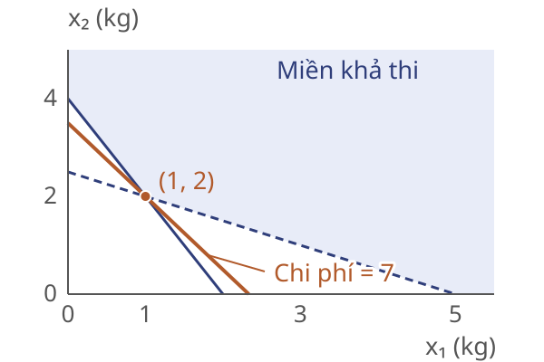
Biên liền: $2x_1+x_2=4$.
Nghiệm $x^*=(1,\,2)$: nitơ 4 g, phốtpho 5 g.
Chi phí $3\cdot1+2\cdot2=7$, tức 70 nghìn đồng.
Mọi điểm khả thi: $3x_1+2x_2=\tfrac43(2x_1+x_2)+\tfrac13(x_1+2x_2)\ge7$.
Câu hỏi: nếu giá nguyên liệu I tăng từ 3 lên 4, nghiệm thay đổi thế nào?
Mô hình pha trộn đã được nhận dạng là LP và chứng nhận lồi. Còn lại ba việc: tìm nghiệm, chứng minh nghiệm đó tối ưu mà không dùng thuật toán, và đọc nghiệm thành quyết định mua.
Trên hình, hai trục là $x_1$ và $x_2$. Miền khả thi nằm trong góc phần tư thứ nhất, phía trên biên liền $2x_1+x_2=4$ (nitơ) và biên đứt $x_1+2x_2=5$ (phốtpho). Các đường cùng chi phí $3x_1+2x_2=\alpha$ song song; giảm $\alpha$ làm đường dịch về phía gốc. Giá trị $\alpha$ nhỏ nhất mà đường còn chạm miền khả thi là 7, tại giao điểm $(1,2)$ của hai biên. Hình cho vị trí nghiệm; tổ hợp không âm của hai ràng buộc với hệ số $\mu=(\tfrac43,\tfrac13)$ chứng minh nó tối ưu: với mọi điểm khả thi, $3x_1+2x_2\ge\tfrac43\cdot4+\tfrac13\cdot5=7$, và $x^*=(1,2)$ khả thi, đạt dấu bằng (Mệnh đề 02.11, Ví dụ 02.8).
Đọc nghiệm: mua 1 kg nguyên liệu I và 2 kg nguyên liệu II; cả hai yêu cầu vừa đủ. So với phương án chỉ dùng loại II, pha trộn tiết kiệm 10 nghìn đồng. Câu hỏi trên trang: khi giá loại I tăng lên 4, mục tiêu là $4x_1+2x_2=2(2x_1+x_2)\ge8$; mọi điểm trên đoạn nối $(0,4)$ và $(1,2)$ khả thi và đạt 8, nên có vô số nghiệm (Nhận xét 02.12). Nguồn: Boyd và Vandenberghe (2004), §4.3.1.
Bài toán pha trộn tuyến tính ngay từ đầu; bài toán hồi quy sai số tuyệt đối có mục tiêu lồi nhưng chứa trị tuyệt đối, nên chưa ở dạng LP.
Hồi quy với sai số tuyệt đối
Nhu cầu: khớp đường thẳng theo tổng độ lệch tuyệt đối.
$u_i$ $-2$ $-1$ $0$ $1$ $2$
$y_i$ $-2$ $-1$ $3$ $1$ $2$
Mô hình: $\hat{y}_i=w_1u_i+w_0$, $w=(w_1,w_0)$.
$X\in\mathbb{R}^{5\times2}$ có hàng thứ $i$ là $(u_i,1)$.
$r=Xw-y$, mục tiêu $\min_w \|r\|_1=\sum_i |r_i|$.
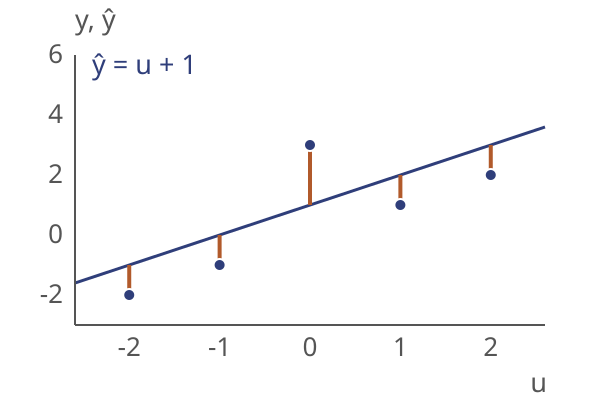
Hàm mục tiêu $\|r\|_1$ đã lồi, nhưng trị tuyệt đối chưa ở dạng LP.
Bài toán pha trộn đã có cấu trúc tuyến tính sẵn. Ví dụ học máy này có mục tiêu lồi nhưng chưa tuyến tính, và tạo nhu cầu cho kỹ thuật biến phụ.
Dữ liệu là năm quan sát hồi quy của dữ liệu chung (Ví dụ 02.1(a)): $u=(-2,-1,0,1,2)$, $y=(-2,-1,3,1,2)$, gồm bốn điểm thẳng hàng và một điểm lệch $(0,3)$. Mô hình $\hat y_i=w_1u_i+w_0$ có hệ số góc $w_1$ và hệ số chặn $w_0$. Ma trận thiết kế $X$ có hàng thứ $i$ là $(u_i,1)$, nên $Xw$ là vector năm dự đoán và phần dư $r=Xw-y$ có thành phần $r_i=w_1u_i+w_0-y_i$. Trên hình, năm điểm dữ liệu cùng đường thử $\hat y=u+1$; các đoạn thẳng đứng là phần dư $r=(1,1,-2,1,1)$, với tổng độ lệch $\|r\|_1=6$.
Mục tiêu lồi: $r$ affine theo $w$, hàm $|\cdot|$ lồi, hợp với hàm affine và tổng giữ tính lồi. Tuy vậy $|\cdot|$ không affine, nên bài toán chưa thuộc dạng LP; hàm cũng không khả vi tại các điểm có $r_i=0$. Mô hình dự đoán tuyến tính theo $u$ không làm bài toán tối ưu thành tuyến tính; lớp bài toán do hàm mất mát quyết định. Nguồn: Boyd và Vandenberghe (2004), §6.1.1 (xấp xỉ theo chuẩn $\ell_1$).
Trị tuyệt đối là giá trị lớn nhất của hai hàm tuyến tính, $|r|=\max(r,-r)$; tính chất này cho phép thay mỗi $|r_i|$ bằng một biến phụ cùng hai bất đẳng thức tuyến tính.
Biến phụ cho giá trị tuyệt đối
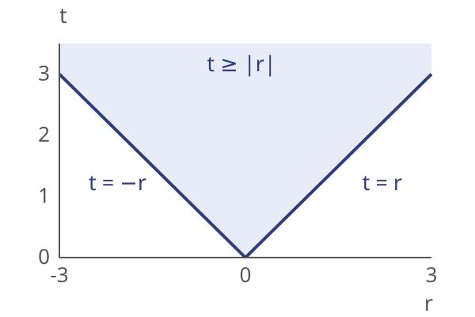
Với một số vô hướng $r$: $t\ge|r| \iff t\ge r$ và $t\ge -r$.
Với $N$ quan sát, $r=Xw-y$, đặt biến $t_i$ cho mỗi $r_i$.
$$\begin{aligned}
\min_{w,\,t}\;& \mathbf{1}^Tt\\
\text{subject to}\;\; & -t\le r\le t.
\end{aligned}$$
Ký hiệu: $\mathbf{1}=(1,\ldots,1)\in\mathbb{R}^N$.
Cực tiểu hóa tổng các cận trên của sai số.
Mục tiêu $\|r\|_1$ lồi nhưng không affine. Trị tuyệt đối được biểu diễn bằng các ràng buộc tuyến tính nhờ một biến mới chặn trên nó.
Với một số vô hướng $r$, vì $|r|=\max(r,-r)$ nên $t\ge|r|$ tương đương với hai bất đẳng thức tuyến tính $t\ge r$ và $t\ge-r$ (Bổ đề 02.14). Trên hình mặt phẳng $(r,t)$, miền $\{(r,t)\mid t\ge|r|\}$ là phần phía trên chữ V, gọi là tập trên đồ thị (epigraph) của $|\cdot|$; nó là giao của hai nửa mặt phẳng nên lồi. Với $N$ quan sát và $d$ tham số, $X\in\mathbb R^{N\times d}$, $y\in\mathbb R^N$, $w\in\mathbb R^d$; mỗi phần dư $r_i$ có một biến phụ (auxiliary variable) $t_i$, ghép thành $t\in\mathbb R^N$. Ràng buộc $-t\le Xw-y\le t$ hiểu theo từng thành phần, tức $2N$ bất đẳng thức tuyến tính theo $(w,t)$, và $\mathbf1^Tt=\sum_it_i$. Với năm quan sát, $N=5$, $d=2$: bài toán mới có 7 biến và 10 bất đẳng thức.
Mỗi cặp khả thi chỉ bảo đảm $t_i\ge|r_i|$; tại nghiệm, mục tiêu đẩy từng $t_i$ xuống nên $t_i=|r_i|$. Kỹ thuật này dùng được cho mọi tổng có hệ số không âm của các cực đại của hàm affine. Nguồn: Boyd và Vandenberghe (2004), Convex Optimization , §4.1.3 (dạng trên đồ thị), §6.1.1.
Muốn thay bài toán gốc bằng LP này, cần một quan hệ chính xác giữa hai tập khả thi; định nghĩa biến đổi tương đương cố định quan hệ đó.
Biến đổi tương đương
Nhu cầu: giải LP thay cho $\min_w\|r\|_1$ mà không mất nghiệm.
Trực quan. $\min_x|x-2|$ và $\min_{x,t}t$ với $t\ge\pm(x-2)$: từ $x$ lấy $t=|x-2|$; từ $(x,t)$ giữ $x$.
Định nghĩa. Cho $(\mathrm P)$: $\min_{x\in C}f_{\mathrm P}(x)$ và $(\mathrm Q)$: $\min_{\zeta\in C'}f_{\mathrm Q}(\zeta)$.
$(\mathrm Q)$ là biến đổi tương đương của $(\mathrm P)$ khi có $\varphi\colon C\to C'$, $\psi\colon C'\to C$, $T$ tăng chặt sao cho
$$\begin{aligned}
f_{\mathrm Q}(\varphi(x))&\le T\bigl(f_{\mathrm P}(x)\bigr)\quad\forall x\in C,\\
T\bigl(f_{\mathrm P}(\psi(\zeta))\bigr)&\le f_{\mathrm Q}(\zeta)\quad\forall\zeta\in C'.
\end{aligned}$$
Mệnh đề. $\psi$ đưa nghiệm của $(\mathrm Q)$ thành nghiệm của $(\mathrm P)$, $\varphi$ ngược lại.
Biến phụ $t$ cho một bài toán mới theo $(w,t)$, với nhiều biến hơn bài toán gốc. Muốn giải bài toán mới thay cho bài toán gốc, cần đi lại giữa hai tập khả thi bằng các ánh xạ cho bằng công thức, không dùng nghiệm đã biết.
Định nghĩa 02.5 đòi hai ánh xạ: $\varphi$ đưa mỗi phương án gốc sang bài toán mới với giá trị không lớn hơn, $\psi$ khôi phục một phương án gốc với giá trị không lớn hơn, sau khi đổi thang giá trị bằng hàm tăng chặt $T$. Với biến phụ, $\varphi(w)=(w,|Xw-y|)$, $\psi(w,t)=w$ và $T(s)=s$; với đổi biến logarit của quy hoạch hình học, $T=\log$. Hai ánh xạ không cần là nghịch đảo của nhau: $\varphi(\psi(w,t))=(w,|Xw-y|)$ có thể khác $(w,t)$. Khi $T(s)=s$, hai bài toán có cùng giá trị tối ưu, kể cả khi giá trị đó là $\pm\infty$.
Chứng minh phần nghiệm của $(\mathrm Q)$ trong Mệnh đề 02.6: nếu $\zeta^*$ là nghiệm thì với mọi $x\in C$, $T(f_{\mathrm P}(\psi(\zeta^*)))\le f_{\mathrm Q}(\zeta^*)\le f_{\mathrm Q}(\varphi(x))\le T(f_{\mathrm P}(x))$, và $T$ tăng chặt cho $f_{\mathrm P}(\psi(\zeta^*))\le f_{\mathrm P}(x)$. Một phép thay mục tiêu, như cộng số hạng phạt hay thay mất mát, không có ánh xạ khôi phục cho bằng công thức (Nhận xét 02.7). Nguồn: Boyd và Vandenberghe (2004), Convex Optimization , §4.1.3, tr. 130–131.
Tính tương đương của phép biến đổi
Định lý. LP có biến phụ là biến đổi tương đương của $\min_w\|r\|_1$, với $T(s)=s$ (Định lý 02.15).
$\varphi(w)=(w,|r|)$: điểm khả thi của LP, cùng giá trị mục tiêu.
$\psi(w,t)=w$: mọi $(w,t)$ khả thi có $\mathbf 1^Tt\ge\|r\|_1$.
Kết luận: khối $w$ của nghiệm LP là nghiệm của bài toán gốc.
Định nghĩa biến đổi tương đương được áp dụng cho hai bài toán $\min_w\|r\|_1$ và $\min_{w,t}\mathbf1^Tt$ với $-t\le Xw-y\le t$.
Thẻ trái là điều kiện thứ nhất: với mọi $w$, $\varphi(w)=(w,|r|)$, tức $t_i=|r_i|$, cho một điểm khả thi của LP có mục tiêu bằng $\|r\|_1$; do đó giá trị tối ưu của LP không lớn hơn giá trị tối ưu gốc. Thẻ phải là điều kiện thứ hai: mọi $(w,t)$ khả thi có $t_i\ge|r_i|$, nên $\mathbf1^Tt\ge\|r\|_1$ tại cùng $w=\psi(w,t)$; do đó giá trị tối ưu của LP không nhỏ hơn giá trị tối ưu gốc. Hai giá trị tối ưu bằng nhau.
Tại nghiệm có $t_i^*=|r_i^*|$: nếu một $t_i>|r_i|$ thì giảm $t_i$ xuống $|r_i|$ vẫn khả thi và làm mục tiêu nhỏ hơn. Mục tiêu và ràng buộc mới affine, nên bài toán sau biến đổi là LP. Phép biến đổi chỉ thêm biến, không xấp xỉ. Biến phụ $t$ không phải tham số dự đoán; mô hình dự đoán chỉ dùng $w$. Định lý 02.15 phát biểu cùng kết luận cho mọi tổng có hệ số không âm của các cực đại của hàm affine, trên một bài toán cực tiểu. Nguồn: Boyd và Vandenberghe (2004), Convex Optimization , §4.3.1, §6.1.1.
Với tương đương đã chứng minh, nghiệm của LP trên năm quan sát được kiểm tra lại trực tiếp bằng mục tiêu gốc.
Nghiệm hồi quy với sai số tuyệt đối
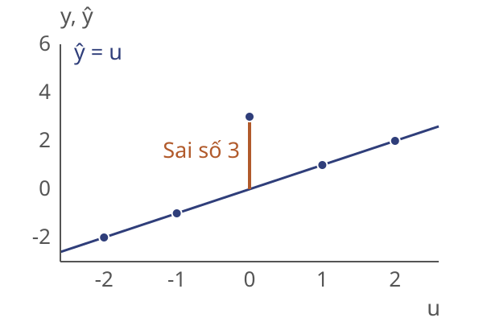
Nghiệm: $w^*=(1,\,0)$, tức $\hat{y}=u$.
$r=(0,\,0,\,-3,\,0,\,0)$.
Tổng sai số tuyệt đối: $3$.
$t^*=(0,\,0,\,3,\,0,\,0)$.
Phép biến đổi đã được chứng minh là tương đương, nên nghiệm của LP trên năm quan sát được kiểm tra bằng một cận dưới của mục tiêu gốc và diễn giải qua $w$ và $t$ (Ví dụ 02.9).
Nghiệm là $w^*=(1,0)$, tức đường dự đoán $\hat y=u$. Phần dư $r=(0,0,-3,0,0)$: bốn điểm nằm đúng trên đường, điểm $(0,3)$ lệch 3; tổng sai số tuyệt đối bằng 3 và $t^*=|r^*|$. Trên hình, đường $\hat y=u$ đi qua bốn điểm và không dịch về phía điểm $(0,3)$.
Chứng minh tối ưu: đặt $\delta=w_1-1$. Phần dư tại $u=\pm1$ là $w_0\mp\delta$, tại $u=\pm2$ là $w_0\mp2\delta$, tại $u=0$ là $w_0-3$. Bất đẳng thức tam giác cho $|w_0-\delta|+|w_0+\delta|\ge2|w_0|$ và $|w_0-2\delta|+|w_0+2\delta|\ge2|w_0|$, nên tổng sai số không nhỏ hơn $4|w_0|+|w_0-3|$. Dùng $|w_0-3|\ge3-|w_0|$, tổng không nhỏ hơn $3+3|w_0|\ge3$. Cận 3 đạt tại $w_0=0$, $\delta=0$. Ngược lại, nếu tổng bằng 3 thì $w_0=0$; khi đó tổng còn $6|\delta|+3$, nên $\delta=0$. Vậy nghiệm duy nhất là $w^*=(1,0)$. Giá trị $t^*$ chỉ ghi lại độ lớn phần dư; dự đoán cho dữ liệu mới chỉ dùng $w^*$. Nguồn: Boyd và Vandenberghe (2004), §6.1.1.
Nghiệm này để điểm $(0,3)$ chịu sai số 3; tiêu chí minimax $\|r\|_\infty=\max_i|r_i|$ trên cùng dữ liệu làm giảm sai số tệ nhất bằng một biến phụ chung.
Hồi quy với sai số lớn nhất
Bài toán gốc $\min_w \|r\|_\infty=\min_w\max_i |r_i|$ làm nhỏ sai số lớn nhất.
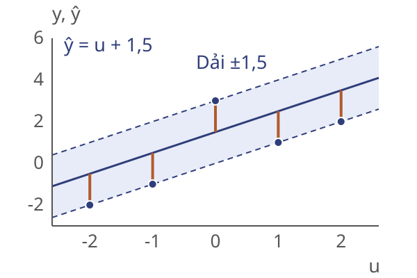
$$\begin{aligned}
\min_{w,\,t}\;& t\\
\text{subject to}\;\; & -t\mathbf{1}\le r\le t\mathbf{1}.
\end{aligned}$$
Một biến phụ chung $t\in\mathbb{R}$.
Nghiệm: $w^*=(1,\,1{,}5)$, $t^*=1{,}5$.
Sai số lớn nhất: $3\to1{,}5$; tổng sai số: $3\to7{,}5$.
Hồi quy sai số tuyệt đối để một điểm lệch 3. Khi yêu cầu là không điểm nào lệch quá nhiều, tiêu chí đổi thành sai số lớn nhất, gọi là hồi quy minimax (còn gọi là xấp xỉ Chebyshev; Định nghĩa 02.13), trên cùng dữ liệu, mô hình và ký hiệu $X,y,w,r$.
Mục tiêu $\|r\|_\infty$ lồi, vì giá trị lớn nhất của các hàm lồi là lồi, nhưng không affine. Một biến vô hướng $t$ chặn trên mọi phần dư: $-t\mathbf1\le Xw-y\le t\mathbf1$, tức $|r_i|\le t$ với mọi $i$. Bài toán mới có $d+1$ biến, $2N$ bất đẳng thức tuyến tính và mục tiêu $t$, nên là LP. Tương đương: $\varphi(w)=(w,\|r\|_\infty)$ cho điểm khả thi cùng giá trị; mọi cặp khả thi có $t\ge\|r\|_\infty$, và $\psi(w,t)=w$.
Chứng minh cận dưới: đặt $\delta=w_1-1$; phần dư tại $u=\pm1$ là $w_0\mp\delta$. Nếu mọi $|r_i|\le t$ thì $|w_0|=\left|\tfrac{(w_0-\delta)+(w_0+\delta)}{2}\right|\le t$; điểm $u=0$ cho $|w_0-3|\le t$. Do đó $3\le|w_0|+|w_0-3|\le2t$, tức $t\ge1{,}5$. Cận đạt tại $w^*=(1,\,1{,}5)$, đường $\hat y=u+1{,}5$: phần dư bằng $1{,}5$ tại bốn điểm và $-1{,}5$ tại $(0,3)$; trên hình, mọi điểm cách đường đúng 1,5. Ô kết luận so hai tiêu chí: sai số lớn nhất giảm từ 3 xuống 1,5, còn tổng sai số tăng từ 3 lên 7,5; mỗi nghiệm tối ưu theo tiêu chí của chính nó (Ví dụ 02.10). Nguồn: Boyd và Vandenberghe (2004), §6.1.1 (xấp xỉ theo chuẩn vô cùng).
Ba ví dụ của phần đủ để phân loại các biến thể: biến thể nào vẫn là LP, biến thể nào mất tính lồi và biến thể nào lồi nhưng ra ngoài lớp LP.
Bài tập: nhận dạng quy hoạch tuyến tính
Câu hỏi: phân loại ba biến thể và giải thích tính lồi.
1. Thêm $w_1\ge 0$ vào bài toán hồi quy sai số tuyệt đối.
2. Buộc $x_1, x_2$ nguyên trong bài toán pha trộn.
3. Đổi mục tiêu hồi quy sang $\sum_i (w_1u_i+w_0-y_i)^2$.
Ba biến thể kiểm tra việc nhận dạng lớp bài toán khi mô hình đổi đúng một giả thiết. Câu trả lời cần nêu lớp bài toán và lý do lồi hoặc không lồi.
Gợi ý: với mỗi biến thể, xác định thành phần bị đổi (ràng buộc, miền của biến hay mục tiêu), rồi kiểm tra lại mục tiêu, các bất đẳng thức, các đẳng thức và miền theo khung chứng nhận của phần 1.
Nguồn: biến thể 2 theo nhận xét về biến nguyên sau Định nghĩa 02.9; biến thể 3 là tổng bình phương phần dư của §6.1. Bài cùng loại: Bài tập 02.10.
Bài tập: nhận dạng quy hoạch tuyến tính
Lời giải:
Thêm $w_1\ge0$: thêm một bất đẳng thức tuyến tính; vẫn là LP, lồi.
Buộc $x_1,x_2$ nguyên: $(1,2)$, $(2,2)$ khả thi, trung điểm $(1{,}5;\,2)$ không nguyên nên không khả thi; không lồi.
Mục tiêu $\|Xw-y\|_2^2$ có Hessian $2X^TX\succeq0$ (nửa xác định dương): lồi nhưng không tuyến tính, nằm ngoài lớp LP.
Biến thể 1: thêm $w_1\ge0$ vào LP có biến phụ chỉ thêm một bất đẳng thức tuyến tính, nên bài toán vẫn là LP và lồi. Biến thể 2: buộc $x_1,x_2$ nguyên làm tập khả thi không lồi, vì $(1,2)$ và $(2,2)$ đều khả thi và nguyên nhưng trung điểm $(1{,}5;\,2)$ không nguyên. Bài toán này là quy hoạch nguyên (integer programming), không còn là LP. Nghiệm $(1,2)$ của bài toán liên tục nguyên nên cũng là nghiệm của bài toán nguyên; nghiệm của một bài toán liên tục khác có thể không nguyên.
Biến thể 3: mục tiêu $\sum_i(w_1u_i+w_0-y_i)^2=\|Xw-y\|_2^2$ không tuyến tính, nên không phải LP. Mục tiêu này lồi, vì Hessian $2X^TX$ thỏa $v^T(2X^TX)v=2\|Xv\|_2^2\ge0$ với mọi $v$. Bài toán thuộc lớp quy hoạch bậc hai. Ba biến thể ứng với ba khả năng: còn trong lớp LP, mất tính lồi, hoặc còn lồi nhưng ra khỏi lớp LP. Nguồn: Boyd và Vandenberghe (2004), §4.3–4.3.1, §6.1.1.
Biến thể thứ ba, tổng bình phương phần dư trên năm quan sát, là điểm xuất phát của phần quy hoạch bậc hai.
3. Quy hoạch bậc hai và ràng buộc bậc haiMuốn chứng nhận lồi cho hồi quy bình phương có số hạng phạt hoặc giới hạn độ lớn hệ số.
Bình phương nhỏ nhất · ma trận nửa xác định dương · chính quy hóa · ràng buộc chặn chuẩn
Biến thể tổng bình phương phần dư ở cuối phần 2 có mục tiêu lồi vì Hessian $2X^TX\succeq0$, nhưng không tuyến tính nên nằm ngoài lớp LP. Trên năm quan sát của dữ liệu chung, bình phương nhỏ nhất được khái quát thành quy hoạch bậc hai (quadratic programming, QP), rồi bổ sung số hạng phạt và một ràng buộc chặn chuẩn cho độ lớn hệ số. Cách chứng nhận theo biến ban đầu là đầu vào của phần 4, nơi tích các biến làm cách này không còn đủ; hai lớp bậc hai và điều kiện $P_i\succeq0$ được dùng lại ở phần 6.
Hồi quy với tổng bình phương sai số
Nhu cầu: chứng nhận lồi và giải hồi quy theo tổng bình phương phần dư.
Năm quan sát của phần 2; $w=(w_1,w_0)$, $\hat y_i=w_1u_i+w_0$.
$$\min_w\; J(w)=\sum_{i=1}^{5}(w_1u_i+w_0-y_i)^2$$
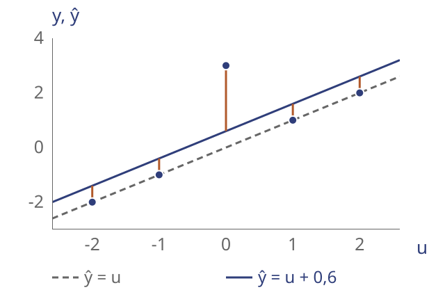
Hai ứng viên: $\hat y=u$ (nét đứt) và $\hat y=u+0{,}6$ (nét liền).
Biến thể thứ ba của phần 2 trở thành bài toán chính: cùng năm quan sát, cùng mô hình $\hat y_i=w_1u_i+w_0$, nhưng đo mức khớp bằng tổng bình phương phần dư $J(w)=\|Xw-y\|_2^2$ (Định nghĩa 01.4).
Bình phương phạt điểm lệch xa nặng hơn nhiều so với điểm lệch gần: phần dư 3 đóng góp 9 vào $J$, phần dư $0{,}6$ chỉ đóng góp $0{,}36$. Vì vậy đường tối ưu theo $J$ bị kéo về phía điểm $(0,3)$. Trên hình, đường $\hat y=u$ (nét đứt) là nghiệm hồi quy sai số tuyệt đối; nó khớp bốn điểm và lệch 3 tại $(0,3)$, nên $J=9$. Đường $\hat y=u+0{,}6$ (nét liền) có phần dư $0{,}6$ tại bốn điểm và $-2{,}4$ tại $(0,3)$, nên $J=4\cdot0{,}36+5{,}76=7{,}2$ (Ví dụ 02.11). Theo tiêu chí bình phương, ứng viên thứ hai tốt hơn, dù ứng viên thứ nhất tối ưu theo tổng sai số tuyệt đối.
Đổi tổng sai số tuyệt đối thành tổng bình phương cho một bài toán khác, với tiêu chí khác và nghiệm khác; không có cặp ánh xạ $\varphi,\psi$ nào nối hai bài toán. Nguồn: Boyd và Vandenberghe (2004), Convex Optimization , §4.4.1 (bình phương nhỏ nhất).
Để nhận ra cấu trúc bậc hai và chứng nhận tính lồi, $J$ được viết lại ở dạng ma trận theo $X$, $w$ và $y$.
Dạng bậc hai của bình phương sai số
$X\in\mathbb{R}^{N\times d}$, $w\in\mathbb{R}^d$, $y\in\mathbb{R}^N$; $r=Xw-y$.
$$J(w)=\|Xw-y\|_2^2=w^TX^TXw-2y^TXw+y^Ty.$$
Nhắc lại: $M=M^T$ nửa xác định dương (positive semidefinite), $M\succeq0$, khi $v^TMv\ge0\ \forall v$; xác định dương, $M\succ0$, khi $v^TMv>0\ \forall v\ne0$. Hessian $2X^TX\succeq0$ vì $v^T(2X^TX)v=2\|Xv\|_2^2\ge0$ với mọi $v\in\mathbb{R}^d$.
Chỉ khai triển biểu thức: giữ nguyên mục tiêu và biến quyết định.
Mục tiêu $J(w)$ là một tổng bình phương. Viết nó ở dạng ma trận cho thấy cấu trúc bậc hai theo $w$ và cho phép chứng nhận tính lồi bằng Hessian.
Kích thước: $X\in\mathbb R^{N\times d}$ với $N$ quan sát và $d$ cột, kể cả cột hằng; $w,v\in\mathbb R^d$; $y,r\in\mathbb R^N$; với năm quan sát, $N=5$, $d=2$. Vì $w^TX^Ty=y^TXw$ là cùng một số vô hướng, khai triển cho phần bậc hai $w^TX^TXw$, phần bậc nhất $-2y^TXw$ và hằng số $y^Ty$. Gradient là $2X^TXw-2X^Ty$, Hessian là ma trận hằng $2X^TX$. Với mọi $v$, $v^T(2X^TX)v=2\|Xv\|_2^2\ge0$, nên Hessian nửa xác định dương với mọi ma trận dữ liệu $X$, và $J$ lồi (Định lý 01.29).
Nếu $X$ có hạng cột đầy đủ thì $Xv\ne0$ khi $v\ne0$, nên $X^TX\succ0$ và $J$ lồi chặt. Điều kiện hạng chỉ cần cho tính lồi chặt và tính duy nhất của nghiệm. Với năm quan sát, $X^TX=\operatorname{diag}(10,5)$ vì $\sum_iu_i^2=10$, $\sum_iu_i=0$ và có năm điểm, nên $X$ có hạng cột đầy đủ. Khai triển giữ nguyên biến và giá trị mục tiêu. Nguồn: Boyd và Vandenberghe (2004), Convex Optimization , §4.4, §4.4.1.
Cấu trúc gồm phần bậc hai với ma trận nửa xác định dương, phần bậc nhất và hằng số được khái quát thành quy hoạch bậc hai, có thêm ràng buộc affine.
Định nghĩa quy hoạch bậc hai
Định nghĩa. Với $P=P^T\succeq0$, quy hoạch bậc hai (QP) là bài toán
$$\begin{aligned}
\min_{x\in\mathbb{R}^n}\;&\tfrac12x^TPx+q^Tx+\rho_0\\
\text{subject to}\quad &Gx\le h,\quad Ax=b.
\end{aligned}$$
$P\succeq0$: mục tiêu lồi.
Ràng buộc affine: tập khả thi lồi.
$P=0$: quy hoạch tuyến tính là một trường hợp riêng.
Khai triển bình phương nhỏ nhất cho một mục tiêu bậc hai lồi không có ràng buộc. Khái quát cấu trúc này cho lớp quy hoạch bậc hai (Định nghĩa 02.17): mục tiêu bậc hai lồi cùng các ràng buộc affine như ở LP.
Kích thước: $x\in\mathbb R^n$, $P\in\mathbb R^{n\times n}$ đối xứng, $q\in\mathbb R^n$, $\rho_0\in\mathbb R$; $G,h,A,b$ như ở quy hoạch tuyến tính. Hệ số $\tfrac12$ là quy ước để gradient bằng $Px+q$ và Hessian bằng $P$. Điều kiện $P\succeq0$ là một phần của định nghĩa: với $P$ có một giá trị riêng âm, mục tiêu không lồi. Hai thẻ trên trang là chứng nhận: $P\succeq0$ cho mục tiêu lồi; ràng buộc affine cho tập khả thi là đa diện, nên lồi. Bình phương nhỏ nhất khớp dạng này với $x=w$, $P=2X^TX$, $q=-2X^Ty$, $\rho_0=y^Ty$ và không có ràng buộc. Khi $P=0$, mục tiêu affine và bài toán là LP, nên mọi LP là một QP.
Nếu thêm $P\succ0$ và tập khả thi không rỗng thì QP có đúng một nghiệm (Mệnh đề 02.18); với $P\succeq0$ chỉ có tính lồi, chưa có sự tồn tại nghiệm. Nguồn: Boyd và Vandenberghe (2004), Convex Optimization , §4.4, §4.4.1.
Với dạng QP đã có, bài toán bình phương nhỏ nhất trên năm quan sát được giải bằng cách hoàn thành bình phương, rồi thêm một ràng buộc affine để thấy nghiệm dịch lên biên.
Nghiệm hồi quy bình phương nhỏ nhất
$$w^*=\begin{pmatrix}1\\ 3/5\end{pmatrix},\qquad J(w^*)=\frac{36}{5}$$
Dự đoán: $\hat y=u+0{,}6$. Câu hỏi: thêm $w_1\le 1/2$ thì nghiệm đổi thế nào?
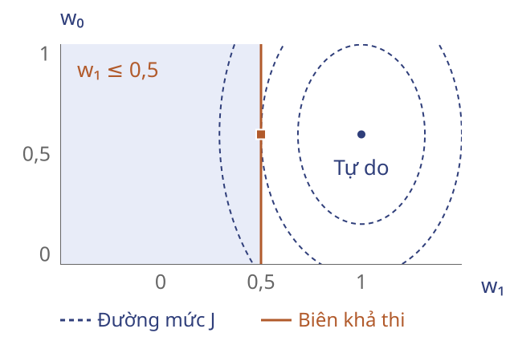
Đường mức (level curve) của $J$; nghiệm tự do $(1;0{,}6)$; miền $w_1\le0{,}5$; nghiệm có ràng buộc $(0{,}5;0{,}6)$.
Bình phương nhỏ nhất là QP không ràng buộc với $P=2X^TX$ xác định dương. Nghiệm của nó được tính bằng cách hoàn thành bình phương và đọc thành đường dự đoán; hình đường mức cho thấy tác động của một ràng buộc affine (Ví dụ 02.12, 02.13).
Với năm quan sát, $X^TX=\operatorname{diag}(10,5)$, $X^Ty=(10,3)$ và $y^Ty=19$. Do đó $J(w)=10w_1^2-20w_1+5w_0^2-6w_0+19$. Hoàn thành bình phương theo từng biến: $$J(w)=10(w_1-1)^2+5\left(w_0-\tfrac35\right)^2+\tfrac{36}{5}.$$ Hai bình phương không âm và bằng 0 khi $w_1=1$, $w_0=3/5$, nên $w^*=(1,3/5)$ và $J(w^*)=36/5=7{,}2$. Đường dự đoán $\hat y=u+0{,}6$ trùng ứng viên thứ hai đã thử; so với nghiệm sai số tuyệt đối $\hat y=u$, đường dịch lên $0{,}6$ về phía điểm $(0,3)$. Vì $X$ có hạng cột đầy đủ, nghiệm này duy nhất.
Trên hình, trục ngang là $w_1$, trục dọc là $w_0$; các đường mức của $J$ là những elip đồng tâm tại nghiệm tự do $(1;\,0{,}6)$. Miền $w_1\le0{,}5$ là nửa mặt phẳng bên trái đường thẳng đứng $w_1=0{,}5$. Câu hỏi trên trang: $J$ tách thành tổng một hàm của $w_1$ và một hàm của $w_0$, nên chỉ cần làm nhỏ $10(w_1-1)^2$ trên $w_1\le1/2$; hàm này giảm trên miền đó, nên $w_1=1/2$, còn $w_0=3/5$ giữ nguyên. Nghiệm có ràng buộc là $(1/2,3/5)$ với $J=5/2+36/5=97/10$, nằm trên biên, tại điểm tiếp xúc giữa đường $w_1=0{,}5$ và đường mức thấp nhất còn chạm miền. Nguồn: Boyd và Vandenberghe (2004), Convex Optimization , §4.4.1.
Hai tiêu chí sai số đã xét chỉ đo mức khớp dữ liệu; khi cần kiểm soát thêm độ lớn hệ số, mục tiêu được bổ sung một số hạng phạt theo $w$.
Chính quy hóa trong hồi quy
Nhu cầu: vừa khớp dữ liệu, vừa kiểm soát độ lớn hệ số.
$$\min_w\;L(w)+\lambda R(w),\quad\lambda\ge0.$$
Ký hiệu: $\|v\|_1=\sum_j|v_j|$ (chuẩn một), $\|v\|_2^2=\sum_jv_j^2$ (bình phương chuẩn hai).
Hàm sai số: $L(w)=\|r\|_1$ hoặc $\|r\|_2^2$.
Số hạng phạt (penalty term): $\lambda R(w)$, với $R(w)=\|w\|_1$ hoặc $\|w\|_2^2$.
Chính quy hóa (regularization) thêm yêu cầu vào mô hình.
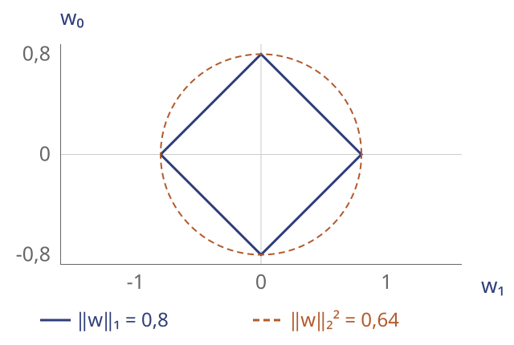
Hai tiêu chí sai số $\|r\|_1$ của phần 2 và $\|r\|_2^2$ vừa xét chỉ đo mức khớp dữ liệu. Nhu cầu mới là kiểm soát độ lớn hệ số $w$, và nhu cầu này làm đổi mô hình.
Mục tiêu có chính quy hóa là $L(w)+\lambda R(w)$, trong đó $L$ là hàm sai số, $R$ là hàm phạt và $\lambda\ge0$ cân bằng hai thành phần (Định nghĩa 02.20). Tham số $\lambda$ là dữ liệu do người lập mô hình chọn; $w$ là biến cần tối ưu; $\lambda=0$ cho lại bài toán không chính quy hóa. Hai lựa chọn của $L$ và hai lựa chọn của $R$ tạo bốn tổ hợp, ký hiệu $\ell_1+\ell_1$, $\ell_1+\ell_2^2$, $\ell_2^2+\ell_1$, $\ell_2^2+\ell_2^2$ theo thứ tự (sai số, số hạng phạt); tổ hợp $\ell_2^2+\ell_1$ là LASSO (least absolute shrinkage and selection operator), tổ hợp $\ell_2^2+\ell_2^2$ là hồi quy ridge (còn gọi là chính quy hóa Tikhonov). Chuẩn một $\|w\|_1=|w_1|+|w_0|$ khác bình phương chuẩn hai $\|w\|_2^2=w_1^2+w_0^2$.
Hình vẽ trên mặt phẳng $(w_1,w_0)$ với hai trục cùng tỷ lệ: tập mức của chuẩn một là hình thoi có đỉnh trên các trục, tập mức của bình phương chuẩn hai là đường tròn. Khi một đường mức elip của sai số tiếp xúc hình thoi tại một đỉnh, một tọa độ của điểm tiếp xúc bằng 0; do đó chính quy hóa chuẩn một có thể cho một hệ số bằng đúng 0, còn chính quy hóa bậc hai thu nhỏ hệ số (Murphy (2022), §11.4.2). Các ví dụ trên năm quan sát phạt cả hệ số chặn $w_0$; hồi quy ridge trong thực hành không phạt hệ số chặn (Murphy (2022), §11.3). Thang đo của đặc trưng ảnh hưởng mức phạt, nên đặc trưng cần được chuẩn hóa trước khi giải. Nguồn: Boyd và Vandenberghe (2004), Convex Optimization , §6.3.2.
Tổ hợp đầu tiên, sai số tuyệt đối với chuẩn một, chỉ chứa trị tuyệt đối, nên kỹ thuật biến phụ của phần 2 áp dụng cho cả hai số hạng.
Sai số tuyệt đối và chính quy hóa chuẩn một
Với $\lambda\ge0$, $r=Xw-y$:
$$\min_w\;\|r\|_1+\lambda\|w\|_1.$$
Thêm biến phụ $t$ cho sai số, $v$ cho hệ số:
$$\begin{aligned}
\min_{w,t,v}\;&\mathbf1^Tt+\lambda\mathbf1^Tv\\
\text{subject to}\quad &-t\le Xw-y\le t,\quad -v\le w\le v.
\end{aligned}$$
Mục tiêu và ràng buộc affine: quy hoạch tuyến tính lồi.
Tổ hợp này gần phần 2 nhất: cả sai số $\|r\|_1$ lẫn số hạng phạt $\|w\|_1$ đều là tổng trị tuyệt đối. Kỹ thuật biến phụ được dùng hai lần và cho một LP.
Kích thước với năm quan sát: $X\in\mathbb R^{5\times2}$, $w,v\in\mathbb R^2$, $y,r,t\in\mathbb R^5$. Biến phụ $t$ chặn trên phần dư qua $-t\le Xw-y\le t$, biến phụ $v$ chặn trên hệ số qua $-v\le w\le v$; mục tiêu $\mathbf1^Tt+\lambda\mathbf1^Tv$ tuyến tính. Tương đương: $\varphi(w)=(w,|r|,|w|)$ (trị tuyệt đối theo từng thành phần) cho cùng giá trị mục tiêu; mọi bộ khả thi có $\mathbf1^Tt\ge\|r\|_1$ và $\mathbf1^Tv\ge\|w\|_1$, và vì $\lambda\ge0$ nên mục tiêu mới không nhỏ hơn mục tiêu gốc tại $\psi(w,t,v)=w$. Tại nghiệm $t=|r|$; $v=|w|$ khi $\lambda>0$, còn khi $\lambda=0$ biến $v$ không bị ép chặt.
Kiểm tra bằng số (Ví dụ 02.15): với $\delta=w_1-1$, từ $|w_0-\delta|+|w_0+\delta|\ge2|\delta|$ và $|w_0-2\delta|+|w_0+2\delta|\ge4|\delta|$, tổng sai số tuyệt đối không nhỏ hơn $6|w_1-1|+|w_0-3|$. Cộng số hạng phạt và dùng $|w_0-3|\ge3-|w_0|$, mục tiêu không nhỏ hơn $6|w_1-1|+\lambda|w_1|+3+(\lambda-1)|w_0|$. Với $\lambda=4$: $6|w_1-1|+4|w_1|\ge4$ và $3|w_0|\ge0$, nên mục tiêu ít nhất 7; điểm $w^*=(1,0)$ có tổng sai số 3 và phạt 4, đạt 7. Với $\lambda=8$: $6|w_1-1|+8|w_1|\ge6$, nên mục tiêu ít nhất 9; điểm $w^*=(0,0)$ cho tổng sai số $\sum_i|y_i|=9$ và phạt 0, đạt 9. Phạt đủ mạnh đưa cả hai hệ số về 0. Nguồn: Boyd và Vandenberghe (2004), §4.3, §6.3.2.
Thay số hạng phạt chuẩn một bằng bình phương chuẩn hai làm mục tiêu có thêm thành phần bậc hai, nên bài toán sau biến đổi không còn là LP.
Sai số tuyệt đối và chính quy hóa bậc hai
Với $\lambda\ge0$, $r=Xw-y$:
$$\min_w\;\|r\|_1+\lambda\|w\|_2^2.$$
Giữ số hạng phạt bậc hai; chỉ thêm biến phụ cho sai số:
$$\begin{aligned}
\min_{w,t}\;&\mathbf1^Tt+\lambda w^Tw\\
\text{subject to}\quad &-t\le Xw-y\le t.
\end{aligned}$$
Mục tiêu bậc hai lồi, ràng buộc affine: bài toán QP.
Tổ hợp thứ hai giữ sai số tuyệt đối và đổi số hạng phạt sang $\lambda\|w\|_2^2$. Chỉ sai số cần biến phụ; số hạng phạt đã ở dạng bậc hai $w^Tw$ nên được giữ nguyên.
Khi khái quát, $X\in\mathbb R^{N\times d}$, $w\in\mathbb R^d$, $t\in\mathbb R^N$. Theo thứ tự biến $(w,t)$, ma trận bậc hai là $P=\operatorname{diag}(2\lambda I_d,0_{N\times N})\succeq0$ và các ràng buộc affine, nên đây là QP lồi. Tương đương như ở phần 2: $\varphi(w)=(w,|Xw-y|)$ cho cùng mục tiêu; mọi cặp khả thi có $\mathbf1^Tt\ge\|Xw-y\|_1$. Ma trận $P$ chỉ nửa xác định dương vì khối của $t$ bằng 0; tuy vậy mục tiêu gốc theo $w$ là tổng của một hàm lồi và hàm lồi chặt $\lambda\|w\|_2^2$ khi $\lambda>0$, nên lồi chặt, và $w^*$ duy nhất mà không cần điều kiện hạng của $X$.
Kiểm tra bằng số với $\lambda=4$ (Ví dụ 02.16): $w^*=(3/4,1/8)$, tổng sai số tuyệt đối $35/8$, số hạng phạt $4(9/16+1/64)=37/16$, mục tiêu $107/16$. Chứng nhận: $\|r\|_1\ge6|w_1-1|+|w_0-3|$, dấu bằng khi $|w_0|\le|w_1-1|$. Dùng thêm $|w_0-3|\ge3-w_0$, mục tiêu không nhỏ hơn $V(w)=6|w_1-1|+3-w_0+4(w_1^2+w_0^2)$. Với $w_1>1$, $\partial V/\partial w_1=6+8w_1>0$, nên chỉ cần xét $w_1\le1$; trên miền đó $V=9-6w_1-w_0+4w_1^2+4w_0^2$ có gradient bằng 0 tại $(3/4,1/8)$. Hàm $V$ lồi và khả vi tại điểm đó với gradient 0, nên đạt cực tiểu toàn cục $107/16$ tại đó. Các dấu bằng đều đạt vì $|w_0|=1/8\le1/4=|w_1-1|$ và $w_0\le3$. Câu hỏi: $\lambda=0$ cho bài toán nào? Lời giải: LP của hồi quy sai số tuyệt đối. Nguồn: Boyd và Vandenberghe (2004), §6.3.2.
Tổ hợp thứ ba đổi vai hai thành phần: sai số bình phương giữ nguyên dạng bậc hai, còn số hạng phạt chuẩn một cần biến phụ.
Bình phương sai số và chính quy hóa chuẩn một
Với $\lambda\ge0$, $r=Xw-y$:
$$\min_w\;\|r\|_2^2+\lambda\|w\|_1.$$
Giữ sai số bậc hai; thêm biến phụ cho hệ số:
$$\begin{aligned}
\min_{w,v}\;&\|Xw-y\|_2^2+\lambda\mathbf1^Tv\\
\text{subject to}\quad &-v\le w\le v.
\end{aligned}$$
Với $\lambda>0$, hàm mục tiêu gốc không khả vi tại các điểm có $w_j=0$; bài toán sau biến đổi là QP lồi.
Tổ hợp thứ ba, LASSO, giữ tổng bình phương phần dư và dùng số hạng phạt chuẩn một. Sai số đã là hàm bậc hai lồi; chỉ số hạng phạt chứa trị tuyệt đối nên chỉ cần biến phụ $v$ cho hệ số.
Theo thứ tự $(w,v)$, mục tiêu $\|Xw-y\|_2^2+\lambda\mathbf1^Tv$ có ma trận bậc hai $P=\operatorname{diag}(2X^TX,0_{d\times d})\succeq0$, các ràng buộc $-v\le w\le v$ affine, nên bài toán sau biến đổi là QP lồi. Mỗi $w$ chọn $v=|w|$ cho cùng mục tiêu; mọi cặp khả thi có $\mathbf1^Tv\ge\|w\|_1$, và nhân với $\lambda\ge0$ bảo toàn bất đẳng thức. Ô kết luận nêu hai tính chất: với $\lambda>0$ hàm mục tiêu gốc không khả vi tại các điểm có $w_j=0$, vì $|w_j|$ không khả vi tại 0; bài toán sau biến đổi có mục tiêu khả vi và ràng buộc tuyến tính.
Với năm quan sát, mục tiêu tách thành $10(w_1-1)^2+\lambda|w_1|$ cộng $5(w_0-3/5)^2+\lambda|w_0|$ cộng hằng số $36/5$, nên làm nhỏ riêng từng phần (Ví dụ 02.17). Với $w_1>0$, đạo hàm $20(w_1-1)+\lambda=0$ cho $w_1=1-\lambda/20$, dương khi $\lambda<20$; khi $\lambda\ge20$, hàm tăng trên $w_1>0$ và giảm trên $w_1<0$, nên $w_1=0$. Tương tự cho $w_0$, với đạo hàm $10(w_0-3/5)+\lambda$ trên $w_0>0$ và ngưỡng $\lambda=6$. Kết quả là phép ngưỡng mềm (soft thresholding, Bổ đề 02.22) $$w_\lambda=\left(\max\left(1-\tfrac{\lambda}{20},0\right),\ \max\left(\tfrac35-\tfrac{\lambda}{10},0\right)\right).$$ Với $\lambda=4$, $w^*=(4/5,1/5)$, tổng bình phương phần dư $42/5$, mục tiêu $42/5+4=62/5$. Với $\lambda=8$, $w=(3/5,0)$: hệ số chặn bằng 0. Phép tách biến dùng $X^TX=\operatorname{diag}(10,5)$. Vì $X$ có hạng cột đầy đủ, $J$ lồi chặt và $w$ duy nhất. Nguồn: Boyd và Vandenberghe (2004), §6.5.4.
Tổ hợp cuối có cả sai số và số hạng phạt ở dạng bình phương, nên khai triển trực tiếp cho một QP không cần biến phụ.
Bình phương sai số và chính quy hóa bậc hai
Với $\lambda\ge0$, $r=Xw-y$:
$$\min_w\;\|r\|_2^2+\lambda\|w\|_2^2.$$
Khối bậc hai sau khai triển:
$$P=2(X^TX+\lambda I)\succeq0.$$
Không cần biến phụ: đây là QP lồi.
$\lambda>0$: $P\succ0$, nghiệm $w$ duy nhất.
Tổ hợp thứ tư, hồi quy ridge (ridge regression, còn gọi là chính quy hóa Tikhonov), dùng tổng bình phương phần dư và bình phương chuẩn hai. Cả hai thành phần đều là bình phương, nên khai triển như ở bình phương nhỏ nhất là đủ.
Khai triển cho $w^T(X^TX+\lambda I)w-2y^TXw+y^Ty$, với cùng biến $w$ và cùng giá trị; ma trận bậc hai theo quy ước $\tfrac12x^TPx$ là $P=2(X^TX+\lambda I)\succeq0$, không có ràng buộc, nên đây là QP lồi. Với mọi $v\ne0$, $v^T(X^TX+\lambda I)v=\|Xv\|_2^2+\lambda\|v\|_2^2>0$ khi $\lambda>0$. Do đó $P\succ0$, mục tiêu lồi chặt và nghiệm duy nhất, không cần điều kiện hạng của $X$; khi $\lambda=0$, tính duy nhất cần $X$ có hạng cột đầy đủ.
Kiểm tra bằng số với $\lambda=10$ (Ví dụ 02.18): $X^TX+\lambda I=\operatorname{diag}(20,15)$ và điều kiện dừng $(X^TX+\lambda I)w=X^Ty$ cho $20w_1=10$, $15w_0=3$. Vậy $w^*=(1/2,1/5)$; tổng bình phương phần dư $21/2$, số hạng phạt $10\cdot29/100=29/10$, mục tiêu $67/5$. Phép khai triển tương đương với mô hình đã có số hạng phạt, không với bài toán chưa phạt. Câu hỏi: nếu chỉ phạt một phần hệ số thì tính duy nhất thay đổi thế nào? Lời giải: ma trận cộng thêm có dạng $\lambda\operatorname{diag}(1,0)$, không còn xác định dương, và tính duy nhất lại phụ thuộc hạng của $X$. Nguồn: Boyd và Vandenberghe (2004), §6.3.2, §4.4.1.
Nghiệm $w^*=(1/2,1/5)$ với $\lambda=10$ là hàng cuối của bảng đối chiếu bốn nghiệm trên cùng dữ liệu.
Nghiệm hồi quy có chính quy hóa
Cùng dữ liệu, bốn lựa chọn sai số và số hạng phạt.
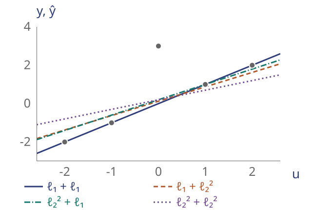
Sai số + phạt $\lambda$ $w^*$ Dạng
$\ell_1+\ell_1$ $4$ $(1,0)$ LP $\ell_1+\ell_2^2$ $4$ $(3/4,1/8)$ QP $\ell_2^2+\ell_1$ $4$ $(4/5,1/5)$ QP $\ell_2^2+\ell_2^2$ $10$ $(1/2,1/5)$ QP
Câu hỏi: $\lambda=0$ khôi phục mô hình nào ở mỗi hàng?
Bốn tổ hợp sai số và số hạng phạt đã có nghiệm riêng trên cùng năm quan sát. Đặt bốn nghiệm cạnh nhau cho thấy tác động của chính quy hóa và giới hạn của phép so sánh.
Bảng dùng $\ell_1$ cho chuẩn một và $\ell_2^2$ cho bình phương chuẩn hai, theo thứ tự sai số rồi số hạng phạt. Cột $w^*=(w_1,w_0)$ cho nghiệm, cột cuối cho lớp bài toán sau biến đổi. Bốn đường trên hình lần lượt là $\hat y=u$, $\hat y=\tfrac34u+\tfrac18$, $\hat y=\tfrac45u+\tfrac15$ và $\hat y=\tfrac12u+\tfrac15$, phân biệt bằng màu và nét. Mỗi hàng được so với nghiệm không phạt cùng tiêu chí sai số: $(1,0)$ cho sai số tuyệt đối và $(1,3/5)$ cho bình phương nhỏ nhất. Hàng đầu giữ nguyên $(1,0)$ ở $\lambda=4$. Ở ba hàng còn lại, độ lớn của $w$ đo bằng chính số hạng phạt của hàng đó giảm, nhưng từng hệ số không nhất thiết giảm: ở hàng hai, hệ số góc giảm từ 1 xuống $3/4$ còn hệ số chặn tăng từ 0 lên $1/8$.
Giá trị mục tiêu bốn hàng là $7$, $107/16$, $62/5$, $67/5$, mỗi giá trị tính theo mục tiêu của chính hàng đó, nên các số này không so sánh được với nhau; hàng cuối còn dùng $\lambda=10$. Câu hỏi trên trang: $\lambda=0$ khôi phục mô hình nào? Lời giải: hai hàng đầu trở về hồi quy sai số tuyệt đối với nghiệm $(1,0)$; hai hàng cuối trở về bình phương nhỏ nhất với nghiệm $(1,3/5)$. Nguồn: Boyd và Vandenberghe (2004), §6.3.2, §6.5.4.
Số hạng phạt là một chi phí mềm cho phép đánh đổi giữa khớp dữ liệu và độ lớn hệ số; khi yêu cầu là một mức chặn bắt buộc, độ lớn hệ số phải đi vào ràng buộc.
Hồi quy với giới hạn độ lớn hệ số
Nhu cầu: một mức chặn bắt buộc cho độ lớn hệ số.
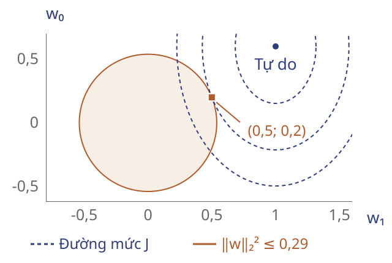
$$\begin{aligned}
\min_w\;&J(w)\\
\text{subject to}\quad &\|w\|_2^2\le\tfrac{29}{100}.
\end{aligned}$$
$w^*=(1/2,1/5)$.
$J(w^*)=21/2$.
Số hạng phạt $\lambda\|w\|_2^2$ làm tăng giá trị mục tiêu khi hệ số lớn nhưng không loại các hệ số đó. Yêu cầu chuẩn hệ số không vượt một mức cố định là một ràng buộc chặn chuẩn (norm constraint), xét trên cùng năm quan sát với $w\in\mathbb R^2$ (Ví dụ 02.19).
Mô hình là $\min_wJ(w)$ với $\|w\|_2^2\le\Delta^2$, ở đây $\Delta^2=29/100$. Hàm $f_1(w)=w^Tw-29/100$ có Hessian $2I\succ0$, nên lồi và tập $\{w\mid f_1(w)\le0\}$, một hình tròn, lồi. Mục tiêu $J$ lồi như đã chứng nhận. Trên hình, hình tròn tâm gốc là miền khả thi; nghiệm tự do $(1;\,0{,}6)$ nằm ngoài vì $\|(1,3/5)\|_2^2=34/25>29/100$; đường mức $J=10{,}5$ tiếp xúc hình tròn tại $(0{,}5;\,0{,}2)$, nên nghiệm có ràng buộc nằm trên biên.
Chứng minh tối ưu: $w_{10}=(1/2,1/5)$ là nghiệm của bài toán phạt với $\lambda=10$, nên $J(w)+10\|w\|_2^2\ge J(w_{10})+10\cdot\tfrac{29}{100}$ với mọi $w$. Với $w$ khả thi, $$J(w)\ge J(w_{10})+10\left(\tfrac{29}{100}-\|w\|_2^2\right)\ge J(w_{10}).$$ Vì $\|w_{10}\|_2^2=1/4+1/25=29/100$, điểm $w_{10}$ khả thi, nên nó tối ưu với $J=21/2$. Đây là Mệnh đề 02.26: nghiệm $w_\lambda$ của bài toán có phạt là nghiệm của bài toán có ràng buộc $R(w)\le R(w_\lambda)$. Trường hợp biên: $\Delta=0$ buộc $w=0$; khi $\Delta^2\ge34/25$, nghiệm bình phương nhỏ nhất khả thi và là nghiệm. Nguồn: Boyd và Vandenberghe (2004), §4.4, §6.3.2.
Ràng buộc hình tròn là một bất đẳng thức bậc hai lồi; cho phép cả mục tiêu lẫn các ràng buộc ở dạng bậc hai lồi ta được quy hoạch bậc hai có ràng buộc bậc hai.
Quy hoạch bậc hai có ràng buộc bậc hai
Định nghĩa. Với $P_i=P_i^T\succeq0$, $i=0,\ldots,m$, quy hoạch bậc hai có ràng buộc bậc hai (QCQP) là bài toán
$$\begin{aligned}
\min_{x\in\mathbb R^n}\;&\tfrac12x^TP_0x+q_0^Tx+\rho_0\\
\text{subject to}\quad &\tfrac12x^TP_ix+q_i^Tx+\rho_i\le0,\quad i=1,\ldots,m,\\
&Ax=b.
\end{aligned}$$
Mục tiêu lồi; các bất đẳng thức lồi và đẳng thức affine xác định tập khả thi lồi.
Mô hình giới hạn hệ số có mục tiêu bậc hai và một ràng buộc bậc hai. Cấu trúc đó được khái quát thành quy hoạch bậc hai có ràng buộc bậc hai (quadratically constrained quadratic programming, QCQP; Định nghĩa 02.24).
Kích thước: $x\in\mathbb R^n$; với $i=0,\ldots,m$, $P_i\in\mathbb R^{n\times n}$ đối xứng, $q_i\in\mathbb R^n$, $\rho_i\in\mathbb R$; $A,b$ như ở dạng phổ biến. Chỉ số $i=0$ dành cho mục tiêu, $i=1,\ldots,m$ cho các bất đẳng thức. Chứng nhận (Mệnh đề 02.25): $P_0\succeq0$ cho mục tiêu lồi; mỗi $P_i\succeq0$ với $i\ge1$ cho hàm ràng buộc lồi, nên tập mức dưới tương ứng lồi; $Ax=b$ affine. Theo khung ở phần 1, tập khả thi là giao các tập lồi và bài toán lồi.
Mô hình giới hạn hệ số là trường hợp $x=w$, $P_0=2X^TX$, $q_0=-2X^Ty$, $\rho_0=y^Ty$, và $P_1=2I$, $q_1=0$, $\rho_1=-29/100$. Nếu $P_i=0$ với mọi $i\ge1$ thì QCQP là QP; nếu thêm $P_0=0$ thì là LP. Ba lớp lồng nhau theo thứ tự LP, QP, QCQP. Câu hỏi: một ma trận đối xứng tùy ý trong ràng buộc có giữ được tính lồi không? Lời giải: không; $x_1^2-x_2^2\le1$ chứa $(2,\sqrt3)$ và $(2,-\sqrt3)$ nhưng không chứa trung điểm $(2,0)$. Ràng buộc $\|w\|_2^2\ge\Delta^2$, viết thành $\Delta^2-w^Tw\le0$, có ma trận $-2I$ và cũng là trường hợp như vậy. Nguồn: Boyd và Vandenberghe (2004), Convex Optimization , §4.4.
Ba biến thể nhận dạng cuối phần kiểm tra khung chứng nhận của QP và QCQP khi thêm ràng buộc, đảo chiều bất đẳng thức hoặc đặt hệ số phạt bằng 0.
Bài tập: nhận dạng bài toán bậc hai
Câu hỏi: phân loại và giải thích từng biến thể.
1. Thêm $\|w\|_1\le\Delta$, $\Delta\ge0$, vào hồi quy bình phương sai số có chính quy hóa chuẩn một.
2. Đổi ràng buộc chặn chuẩn thành $\|w\|_2^2\ge\Delta^2$, $\Delta>0$.
3. Đặt $\lambda=0$: có buộc $v=|w|$ tại nghiệm tối ưu?
Ba biến thể kiểm tra việc nhận dạng lớp bài toán của phần 3 khi mô hình đổi một giả thiết. Câu trả lời cần nêu lớp bài toán, lý do lồi hoặc không lồi, và quan hệ giữa biến phụ với nghiệm.
Gợi ý: biểu diễn $\|w\|_1\le\Delta$ bằng chính biến phụ $v$ của số hạng phạt chuẩn một; với chiều $\ge$, thử hai điểm đối nhau trên đường tròn bán kính $\Delta$; với $\lambda=0$, xét hệ số của $v$ trong mục tiêu.
Nguồn: câu 1 theo Nhận xét 02.27; câu 2 theo nhận xét sau Định nghĩa 02.24 về điều kiện $P_i\succeq0$; câu 3 theo Định lý 02.15(b). Bài cùng loại: Bài tập 02.10.
Bài tập: nhận dạng bài toán bậc hai
Lời giải:
Thêm $\mathbf 1^Tv\le \Delta$, dùng chung biến phụ $-v\le w\le v$: mọi ràng buộc affine, vẫn là QP.
$\|w\|_2^2\ge \Delta^2$: hai điểm đối nhau trên đường tròn khả thi, trung điểm $0$ thì không; không lồi.
$\lambda=0$: không buộc $v=|w|$ tại nghiệm; khối $w$ vẫn là nghiệm đúng.
Biến thể 1: thêm $\|w\|_1\le\Delta$ vào bài toán bình phương sai số có chính quy hóa chuẩn một. Dùng chung biến phụ $v$ với $v\ge w$, $v\ge-w$ và thêm $\mathbf1^Tv\le\Delta$; mục tiêu vẫn bậc hai lồi, mọi ràng buộc affine, nên bài toán vẫn là QP. Với $w$ khả thi cho bài toán gốc, chọn $v=|w|$ được điểm khả thi mới cùng mục tiêu. Ngược lại, mọi cặp mới có $\|w\|_1\le\mathbf1^Tv\le\Delta$, nên $w$ khả thi cho bài toán gốc, và mục tiêu mới không nhỏ hơn mục tiêu gốc vì hệ số phạt không âm. Biến thể 2: miền $\|w\|_2^2\ge\Delta^2$ với $\Delta>0$ là phần ngoài hình tròn. Hai điểm đối nhau trên đường tròn bán kính $\Delta$ đều khả thi, nhưng trung điểm của chúng là gốc $0$, không khả thi. Tập khả thi không lồi, nên bài toán không lồi dù mục tiêu lồi.
Biến thể 3: với $\lambda=0$, hệ số của $v$ trong mục tiêu bằng 0, nên tại nghiệm $v$ có thể lớn hơn $|w|$. Khối $w$ vẫn là nghiệm đúng, vì $v$ chỉ là biến phụ. Nguồn: Boyd và Vandenberghe (2004), §4.4, §6.3.2, §6.5.4.
Khi tích và tỷ số của các biến dương làm bài toán không lồi theo biến ban đầu, kiểm tra theo biến ban đầu không còn đủ; phần 4 xét phép đổi biến logarit, kèm điều kiện để phép đổi biến cho bài toán lồi tương đương.
4. Quy hoạch hình họcMuốn đưa mô hình chứa tích, tỷ số biến dương về bài toán lồi tương đương.
Đơn thức · tổng đơn thức dương · đổi biến logarit · thiết kế hộp
Tính lồi ở phần 2 và phần 3 được chứng nhận theo biến ban đầu hoặc sau khi thêm biến phụ. Diện tích và thể tích hộp $x_1x_2x_3$ là tích của các biến dương, nên mô hình thiết kế hộp không lồi theo kích thước. Dạng chuẩn của quy hoạch hình học (geometric programming, GP) cùng phép đổi biến $z=\log x$ cho một bài toán lồi tương đương, và nghiệm được khôi phục bằng $x^*=e^{z^*}$. Bài toán phân bổ công suất, chứa tỷ số của các biến, là phần đọc thêm. Điều kiện áp dụng của phép đổi biến, gồm biến dương và hàm đúng cấu trúc, là đầu vào của phần 5.
Hộp đựng và chi phí vật liệu
Nhu cầu: đưa mô hình chứa tích biến dương về bài toán lồi tương đương.
Ví dụ: hộp kín dung tích $8\,\mathrm{dm}^3$, dùng ít vật liệu nhất.
Cần chọn chiều dài, chiều rộng và chiều cao.
Cùng một vật liệu cho mọi mặt: chi phí tỷ lệ với diện tích bề mặt.
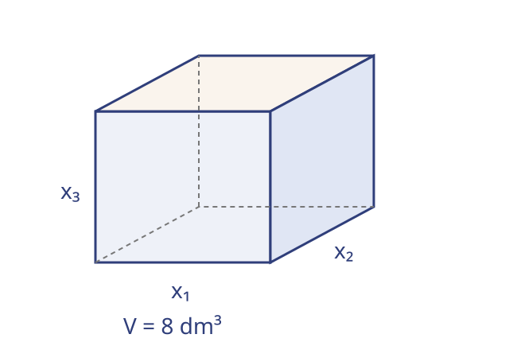
Bài toán thiết kế hộp xuất phát từ một quyết định thiết kế, trước khi có ký hiệu: chứa được một lượng hàng cố định với ít vật liệu nhất.
Dung tích $8\,\mathrm{dm}^3$ là yêu cầu cho trước; ba cạnh là quyết định. Hai hộp cùng dung tích có thể cần lượng vật liệu khác nhau, nên hình dạng hộp ảnh hưởng tới chi phí. Mô hình bỏ qua độ dày, mép ghép và phần hao hụt khi cắt, và giả thiết giá trên một đơn vị diện tích như nhau ở cả sáu mặt. Với giả thiết đó, chi phí tỷ lệ với diện tích bề mặt, nên làm nhỏ chi phí tương đương làm nhỏ diện tích. Hình vẽ một hộp kín với ba cạnh $x_1,x_2,x_3$ cần chọn.
Lấy 1 dm làm đơn vị chiều dài; $x_1,x_2,x_3$ là số đo của ba cạnh theo đơn vị đó, nên là các số không thứ nguyên và lấy logarit được. Đầu ra cần báo cáo là ba kích thước theo dm và diện tích theo $\mathrm{dm}^2$. Nguồn: Boyd và Vandenberghe (2004), Convex Optimization , §4.5.
Diện tích sáu mặt và thể tích đều là tích của các kích thước; mô hình thiết kế hộp viết hai đại lượng này thành mục tiêu và ràng buộc.
Mô hình thiết kế hộp
Biến quyết định: $x=(x_1,x_2,x_3)>0$, theo đơn vị chiều dài $1\,\mathrm{dm}$.
$$\begin{aligned}
\min_{x>0}\;&\mathcal S(x)=2(x_1x_2+x_1x_3+x_2x_3)\\
\text{subject to}\quad &x_1x_2x_3=8.
\end{aligned}$$
Hộp $(1,2,4)$: $\mathcal S=28$.
Hộp $(2,2,2)$: $\mathcal S=24$.
Tích kích thước xuất hiện ở cả mục tiêu và ràng buộc.
Yêu cầu thiết kế được chuyển thành mô hình tối ưu; câu hỏi là mô hình có lồi theo ba kích thước hay không (Ví dụ 02.20).
Biến quyết định là $x_1,x_2,x_3>0$ theo đơn vị 1 dm. Hộp có hai mặt diện tích $x_1x_2$, hai mặt $x_1x_3$ và hai mặt $x_2x_3$, nên diện tích bề mặt là $\mathcal S(x)=2(x_1x_2+x_1x_3+x_2x_3)$. Yêu cầu dung tích là $x_1x_2x_3=8$. Hai ứng viên trên trang đều có thể tích 8. Hộp $(1,2,4)$ có ba tích $2,4,8$, nên $\mathcal S=2\cdot14=28$. Hộp $(2,2,2)$ có ba tích bằng 4, nên $\mathcal S=24$. Hai hộp cùng thể tích có diện tích khác nhau, nên hình dạng quyết định lượng vật liệu.
Mô hình không lồi theo biến ban đầu. Hai điểm $(1,2,4)$ và $(4,2,1)$ cùng khả thi, nhưng trung điểm $(5/2,2,5/2)$ có tích $25/2\ne8$, nên tập khả thi không lồi. Hàm $\mathcal S$ cũng không lồi: Hessian của $\mathcal S$ có đường chéo bằng 0 và mọi phần tử ngoài đường chéo bằng 2, với các giá trị riêng $4,-2,-2$. Ô kết luận chỉ ra nguồn gốc của khó khăn: tích các kích thước xuất hiện ở cả mục tiêu lẫn ràng buộc. Yêu cầu thể tích và chi phí được giữ nguyên; chỉ cách biểu diễn tích các kích thước sẽ thay đổi. Nguồn: Boyd và Vandenberghe (2004), §4.5.
Hai biểu thức $x_1x_2x_3$ và $x_1x_2+x_1x_3+x_2x_3$ là mẫu của hai lớp hàm, đơn thức và tổng đơn thức dương, mà quy hoạch hình học dựa vào.
Đơn thức và tổng đơn thức dương
Định nghĩa. Với $x\in\mathbb R_{++}^n$ (mọi $x_i>0$), đơn thức (monomial) là hàm
$$g(x)=c\,x_1^{\alpha_1}x_2^{\alpha_2}\cdots x_n^{\alpha_n},
\qquad c>0,\quad\alpha_i\in\mathbb R.$$
Tổng đơn thức dương (posynomial) là tổng hữu hạn các đơn thức:
$$f(x)=\sum_{k=1}^{K}c_k\,x_1^{\alpha_{1k}}\cdots x_n^{\alpha_{nk}},
\qquad c_k>0.$$
Ví dụ. $2x_1^{-1}x_2^{1/2}$ là đơn thức; $x_1+2x_2/x_1$ là tổng đơn thức dương.
Mô hình hộp chứa tích các kích thước và tổng của các tích đó. Hai lớp hàm chứa các biểu thức ấy có tên riêng, kể cả khi số mũ âm hoặc không nguyên (Định nghĩa 02.28).
Miền là $\mathbb R_{++}^n$, tập các vector có mọi thành phần dương. Một đơn thức có dạng $g(x)=c\,x_1^{\alpha_1}\cdots x_n^{\alpha_n}$ với hệ số $c>0$ và số mũ thực $\alpha_i$. Định nghĩa này khác đơn thức của đại số ở hai điểm: số mũ là số thực tùy ý, và hệ số phải dương. Ví dụ trên trang $2x_1^{-1}x_2^{1/2}$ có $c=2$, $\alpha=(-1,1/2)$; hằng số $3$ cũng là đơn thức. Một tổng đơn thức dương là tổng hữu hạn $K$ đơn thức với mọi $c_k>0$; $x_1+2x_2/x_1$ và $(x_1+x_2)^2$ là tổng đơn thức dương, còn $x_1-x_2$ và $1/(x_1+x_2)$ thì không.
Trong mô hình hộp, $x_1x_2x_3/8$ là đơn thức với hệ số $1/8$ và số mũ $(1,1,1)$; diện tích $2x_1x_2+2x_1x_3+2x_2x_3$ là tổng ba đơn thức. Tích, thương và lũy thừa thực của đơn thức là đơn thức; tổng và tích của tổng đơn thức dương là tổng đơn thức dương; thương của tổng đơn thức dương cho một đơn thức là tổng đơn thức dương. Điều kiện "dương" đặt trên các hệ số của biểu diễn, không chỉ trên giá trị của hàm. Nguồn: Boyd và Vandenberghe (2004), Convex Optimization , §4.5.1, tr. 160–161.
Với hai lớp hàm này, dạng chuẩn của quy hoạch hình học quy định hàm nào được đặt ở mục tiêu, ở bất đẳng thức và ở đẳng thức.
Dạng chuẩn của quy hoạch hình học
Định nghĩa. Quy hoạch hình học (GP) dạng chuẩn là bài toán
$$\begin{aligned}
\min_{x\in\mathbb R_{++}^n}\;&f_0(x)\\
\text{subject to}\quad &f_i(x)\le1,\quad i=1,\ldots,m,\\
&g_j(x)=1,\quad j=1,\ldots,p.
\end{aligned}$$
$f_0,\ldots,f_m$: tổng đơn thức dương; $g_1,\ldots,g_p$: đơn thức.
Dạng chuẩn này không nhất thiết lồi theo biến $x$.
Với đơn thức và tổng đơn thức dương đã định nghĩa, dạng chuẩn của quy hoạch hình học (Định nghĩa 02.29) quy định lớp hàm được phép ở mục tiêu, ở bất đẳng thức và ở đẳng thức.
Biến $x\in\mathbb R_{++}^n$ là biến quyết định; các hàm là dữ liệu. Mục tiêu $f_0$ và các vế trái $f_1,\ldots,f_m$ của bất đẳng thức là tổng đơn thức dương; các vế trái $g_1,\ldots,g_p$ của đẳng thức là đơn thức. Vế phải bằng 1 là quy ước chuẩn hóa, để sau khi lấy logarit vế phải bằng 0. Số bất đẳng thức $m$ hoặc số đẳng thức $p$ có thể bằng 0. Biến dương là điều kiện cần cho phép đổi biến logarit.
Bài toán hộp có mục tiêu $\mathcal S$ đúng lớp; chuẩn hóa $x_1x_2x_3=8$ thành $x_1x_2x_3/8=1$ đưa nó về dạng GP với $m=0$, $p=1$. Ô kết luận nêu giới hạn của dạng chuẩn: bài toán hộp vừa thuộc dạng GP vừa không lồi theo kích thước. Tính lồi được chứng nhận sau phép đổi biến. Nguồn: Boyd và Vandenberghe (2004), Convex Optimization , §4.5.2, công thức (4.43), tr. 161.
Các mô hình có vế phải khác 1, đẳng thức giữa hai đơn thức hoặc mục tiêu cực đại được đưa về dạng $f_i\le1$, $g_j=1$ bằng phép chia cho đơn thức và phép đảo mục tiêu.
Biến đổi về dạng chuẩn quy hoạch hình học
$f$: tổng đơn thức dương; $g,g_1,g_2$: đơn thức.
$$\begin{aligned}
f(x)\le g(x)&\iff f(x)/g(x)\le1,\\
g_1(x)=g_2(x)&\iff g_1(x)/g_2(x)=1.
\end{aligned}$$
$$\max_x g(x)\quad\longleftrightarrow\quad\min_x g(x)^{-1}.$$
Chia cho một đơn thức dương giữ đúng cấu trúc cần có.
Dạng chuẩn đòi vế phải bằng 1 và mục tiêu cực tiểu. Ba quy tắc của Mệnh đề 02.30 đưa một mô hình gần đúng cấu trúc về đúng dạng chuẩn, mỗi quy tắc kèm điều kiện hợp lệ.
Mọi biến thuộc $\mathbb R_{++}^n$. Quy tắc 1: $f(x)\le g(x)$ tương đương $f(x)/g(x)\le1$, vì $g(x)>0$ nên phép chia không đổi chiều bất đẳng thức; mỗi số hạng của $f$ chia cho đơn thức $g$ vẫn là đơn thức, nên $f/g$ là tổng đơn thức dương. Quy tắc 2: $g_1=g_2$ tương đương $g_1/g_2=1$, và thương hai đơn thức là đơn thức. Quy tắc 3: hàm $s\mapsto1/s$ giảm chặt trên số dương, nên điểm cực đại của $g$ trùng điểm cực tiểu của $g^{-1}$ trên cùng miền, và $g^{-1}$ là đơn thức; hai giá trị tối ưu là nghịch đảo của nhau.
Ô kết luận nêu điều kiện chung: chỉ chia cho một đơn thức dương mới giữ đúng cấu trúc. Chia cho một tổng đơn thức dương nói chung không cho tổng đơn thức dương, và quy tắc 3 không áp dụng cho cực đại một tổng đơn thức dương. Ba trường hợp thường gặp: với hộp, $x_1x_2x_3=8$ thành $x_1x_2x_3/8=1$; một giới hạn trên $f(x)\le M$ với $M>0$ thành $f(x)/M\le1$; một cận dưới đơn thức $g(x)\ge L>0$ thành $L/g(x)\le1$. Nguồn: Boyd và Vandenberghe (2004), Convex Optimization , §4.5.2, tr. 161.
Khi mô hình đã ở dạng chuẩn, phép đổi biến logarit biến mỗi đơn thức thành hàm mũ của một biểu thức affine.
Phép đổi biến logarit
Đặt $z_i=\log x_i$, tức $x_i=e^{z_i}$, với $i=1,\ldots,n$.
$$\log g(e^z)=\alpha^Tz+\log c.$$
$$\log f(e^z)=\log\left(\sum_{k=1}^{K}e^{\alpha_k^Tz+\beta_k}\right),
\quad\beta_k=\log c_k.$$
$c_ke^{\alpha_k^Tz}=e^{\alpha_k^Tz+\log c_k}$: hệ số dương được đưa vào số mũ.
Dạng chuẩn GP chưa lồi theo $x$. Phép đổi biến logarit biến tích các lũy thừa thành tổ hợp tuyến tính của biến mới.
Logarit là logarit tự nhiên; $z=\log x$ và $x=e^z$ áp dụng theo từng thành phần. Phép đổi là song ánh giữa $\mathbb R_{++}^n$ và $\mathbb R^n$, nên không mất và không thêm điểm khả thi. Với đơn thức, $g(e^z)=c\prod_ie^{\alpha_iz_i}=e^{\alpha^Tz+\log c}$, nên $\log g(e^z)=\alpha^Tz+\log c$ là hàm affine của $z$; vector $\alpha\in\mathbb R^n$ gom các số mũ (Bổ đề 02.31). Với tổng đơn thức dương, mỗi số hạng $c_ke^{\alpha_k^Tz}$ viết thành $e^{\alpha_k^Tz+\beta_k}$ với $\beta_k=\log c_k$, như ô kết luận chỉ ra; phép viết này cần $c_k>0$ để $\log c_k$ xác định. Khi đó $\log f(e^z)$ là logarit của một tổng các hàm mũ của biểu thức affine.
Logarit của một tổng không bằng tổng các logarit, nên $\log f(e^z)$ không affine khi $f$ có từ hai số hạng với vector số mũ khác nhau. Mọi hàm trong dạng chuẩn nhận giá trị dương và logarit tăng chặt, nên $f_i(x)\le1$ tương đương $\log f_i(e^z)\le0$, còn $g_j(x)=1$ tương đương $\log g_j(e^z)=0$, một đẳng thức affine. Tính lồi của hàm logarit tổng hàm mũ (log-sum-exp) được chứng minh riêng (Định lý 02.32). Nguồn: Boyd và Vandenberghe (2004), Convex Optimization , §4.5.3, tr. 162–163.
Ghép các hàm sau đổi biến cho dạng lồi của quy hoạch hình học, cùng cách lấy lại nghiệm của bài toán gốc.
Dạng lồi của quy hoạch hình học
Định lý. Với $z=\log x$, $F_i(z)=\log f_i(e^z)$ và $\bar\alpha_j^Tz+\bar\beta_j=\log g_j(e^z)$, dạng chuẩn GP tương đương bài toán
$$\begin{aligned}
\min_{z\in\mathbb R^n}\;&F_0(z)\\
\text{subject to}\quad &F_i(z)\le0,\quad i=1,\ldots,m,\\
&\bar\alpha_j^Tz+\bar\beta_j=0,\quad j=1,\ldots,p.
\end{aligned}$$
$F_i$ là logarit tổng hàm mũ (log-sum-exp) nên lồi; đẳng thức affine. Khôi phục $x^*=e^{z^*}$.
Sau phép đổi biến, mục tiêu và bất đẳng thức là logarit tổng hàm mũ, còn đẳng thức là affine. Bài toán theo $z$ được viết đầy đủ và chứng minh lồi; nghiệm theo $x$ được khôi phục bằng hàm mũ (Định lý 02.33).
Với $i=0,\ldots,m$, $F_i(z)=\log\sum_{k=1}^{K_i}\exp(\alpha_{ik}^Tz+\beta_{ik})$, trong đó $\alpha_{ik}\in\mathbb R^n$ và $\beta_{ik}=\log c_{ik}$. Nếu $g_j(x)=\bar c_j\prod_\ell x_\ell^{\bar\alpha_{\ell j}}$ với $\bar c_j>0$ thì $\log g_j(e^z)=\bar\alpha_j^Tz+\bar\beta_j$, với $\bar\beta_j=\log\bar c_j$. Chứng nhận tính lồi của một hàm $F$ dạng này: đặt $\pi_k=e^{\alpha_k^Tz+\beta_k}/\sum_\ell e^{\alpha_\ell^Tz+\beta_\ell}$, các trọng số không âm có tổng bằng 1, và $\hat\alpha=\sum_k\pi_k\alpha_k$. Tính trực tiếp được $\nabla F(z)=\hat\alpha$ và $$\nabla^2F=\sum_k\pi_k(\alpha_k-\hat\alpha)(\alpha_k-\hat\alpha)^T\succeq0,$$ vì với mọi $v$, $v^T\nabla^2Fv=\sum_k\pi_k\left[v^T(\alpha_k-\hat\alpha)\right]^2\ge0$. Hessian là ma trận hiệp phương sai của các vector $\alpha_k$ với trọng số $\pi_k$ (Định lý 02.32). Logarit của một hàm lồi bất kỳ không nhất thiết lồi; kết luận ở đây dựa trên cấu trúc tổng hàm mũ.
Phép đổi biến là biến đổi tương đương với $\varphi(x)=\log x$, $\psi(z)=e^z$ và $T=\log$. Nếu $z^*$ là nghiệm của dạng lồi thì $x^*=e^{z^*}$ là nghiệm của bài toán gốc và $f_0(x^*)=e^{F_0(z^*)}$; hai giá trị mục tiêu khác nhau, và phép biến đổi không tự bảo đảm nghiệm tồn tại. Nếu mọi $f_i$ chỉ có một đơn thức thì mọi $F_i$ affine và dạng lồi là một LP. Nguồn: Boyd và Vandenberghe (2004), §4.5.3, tr. 162–163; §3.1.5.
Khung tổng quát đã đủ ba bước; bài toán thiết kế hộp được đưa qua đúng ba bước đó trước khi tìm nghiệm.
Biến đổi bài toán thiết kế hộp
$z_i=\log x_i$, $i=1,2,3$.
$$\begin{aligned}
\min_{z\in\mathbb R^3}\;&\log\left(2e^{z_1+z_2}+2e^{z_1+z_3}+2e^{z_2+z_3}\right)\\
\text{subject to}\quad &z_1+z_2+z_3=\log8.
\end{aligned}$$
Mục tiêu lồi; ràng buộc thể tích thành đẳng thức affine (một mặt phẳng).
Khôi phục kích thước: $x_i=e^{z_i}$, $i=1,2,3$.
Khung vừa chứng minh được áp dụng vào đúng mô hình hộp ban đầu, cho bài toán lồi tương đương trước khi tìm nghiệm (Ví dụ 02.21).
Xuất phát từ dạng chuẩn: mục tiêu $\mathcal S=2x_1x_2+2x_1x_3+2x_2x_3$ và đẳng thức $x_1x_2x_3/8=1$. Đặt $z_i=\log x_i$. Mỗi số hạng diện tích trở thành $2e^{z_1+z_2}=e^{z_1+z_2+\log2}$, tương tự cho hai số hạng còn lại, nên mục tiêu sau khi lấy logarit là $\log(2e^{z_1+z_2}+2e^{z_1+z_3}+2e^{z_2+z_3})$, thuộc lớp logarit tổng hàm mũ. Lấy logarit không đổi điểm cực tiểu, vì diện tích luôn dương và logarit tăng chặt. Đẳng thức thể tích cho $z_1+z_2+z_3-\log8=0$, một mặt phẳng trong $\mathbb R^3$, nên tập khả thi mới lồi.
Bước biến đổi không thay yêu cầu thể tích và không xấp xỉ diện tích. Hai chiều khả thi được bảo đảm bởi phép đổi song ánh, và kích thước được khôi phục bằng $x_i=e^{z_i}$ như ô kết luận ghi. Diện tích theo $\mathrm{dm}^2$ bằng hàm mũ của giá trị mục tiêu mới. Nguồn: Boyd và Vandenberghe (2004), §4.5.3.
Bài toán lồi theo $z$ đã sẵn sàng; nghiệm của nó được đọc thành kích thước hộp và kiểm tra lại bằng một cận dưới độc lập.
Kích thước hộp tối ưu
$$z_1^*=z_2^*=z_3^*=\log2.$$
Hộp lập phương cạnh $2\,\mathrm{dm}$.
$$x_1x_2x_3=8\,\mathrm{dm}^3,\qquad \mathcal S_{\min}=24\,\mathrm{dm}^2.$$
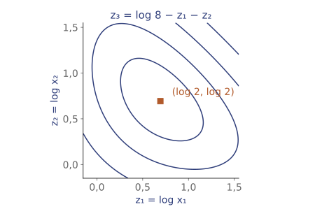
Đường mức của $\log\mathcal S$ sau khi khử $z_3$ bằng ràng buộc thể tích.
Bài toán hộp đã có dạng lồi tương đương. Nghiệm của dạng lồi được đọc thành kích thước thật và kiểm tra lại bằng một lập luận không dùng đổi biến.
Nghiệm của bài toán theo logarit là $z_1^*=z_2^*=z_3^*=\log2$; lấy hàm mũ được hộp lập phương cạnh 2 dm, thể tích $8\,\mathrm{dm}^3$ và diện tích nhỏ nhất $24\,\mathrm{dm}^2$. Giá trị tối ưu của bài toán theo logarit là $\log24$; phải lấy hàm mũ mới được diện tích. So với hộp $(1,2,4)$, cùng dung tích nhưng diện tích giảm từ 28 xuống $24\,\mathrm{dm}^2$. Hình vẽ trên mặt phẳng $(z_1,z_2)$ sau khi khử $z_3=\log8-z_1-z_2$; các đường mức của $\log\mathcal S$ là những đường cong lồng nhau quanh điểm $z_1=z_2=\log2$, tại đó $z_3=\log2$.
Kiểm tra độc lập bằng bất đẳng thức trung bình cộng – trung bình nhân cho ba số dương $x_1x_2,x_1x_3,x_2x_3$: $$x_1x_2+x_1x_3+x_2x_3\ge3\sqrt[3]{(x_1x_2x_3)^2}=12.$$ Dấu bằng khi ba tích bằng nhau, tương đương $x_1=x_2=x_3$ vì các kích thước dương. Vậy $\mathcal S\ge24$ và hộp lập phương đạt cận này. Câu hỏi: nếu yêu cầu thể tích ít nhất $8\,\mathrm{dm}^3$ thì nghiệm thay đổi thế nào? Lời giải: ràng buộc $x_1x_2x_3\ge8$ viết thành $8/(x_1x_2x_3)\le1$, vẫn là GP; cùng bất đẳng thức cho $\mathcal S\ge6(x_1x_2x_3)^{2/3}\ge24$, dấu bằng khi $x_1=x_2=x_3$ và thể tích bằng 8, nên nghiệm vẫn là hộp lập phương cạnh 2. Với thể tích cố định $V>0$, cạnh tối ưu là $V^{1/3}$ và diện tích nhỏ nhất là $6V^{2/3}$. Nguồn: Boyd và Vandenberghe (2004), §4.5.
Bài toán hộp có mục tiêu và ràng buộc là tích các biến; ví dụ đọc thêm về phân bổ công suất đưa vào tỷ số giữa các biến và một mục tiêu cực đại giá trị nhỏ nhất.
Phân bổ công suất cho hai đường truyền (đọc thêm)
Nhu cầu: chia công suất tổng 6 để cải thiện đường truyền yếu hơn.
Tỷ số tín hiệu trên nhiễu và tạp âm (SINR):
$\Gamma_1(p)=p_1/(1+p_2/4)$,
$\Gamma_2(p)=p_2/(1+3p_1/2)$.
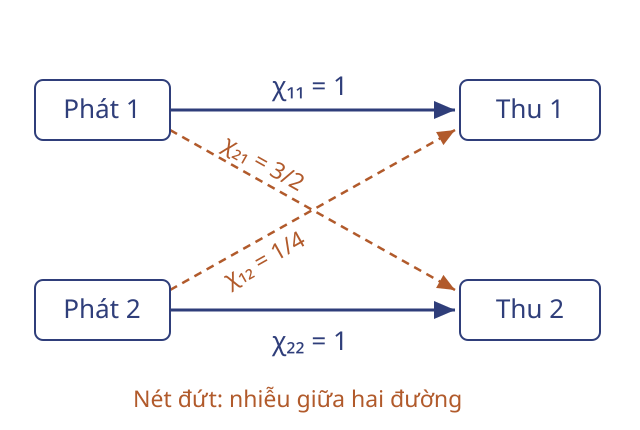
$$\max_{p_1,p_2>0}\;\min\{\Gamma_1(p),\Gamma_2(p)\}\quad\text{subject to}\quad p_1+p_2\le6.$$
Bài toán hộp chỉ chứa tích các biến dương; bài toán phân bổ công suất đưa vào tỷ số của chúng. Hai đường truyền dùng chung một kênh vô tuyến; tăng công suất của một bộ phát làm tín hiệu tại bộ thu của nó mạnh lên nhưng gây nhiễu cho bộ thu của đường kia. Mục tiêu là làm lớn nhất chất lượng của đường kém hơn.
Trên hình, $\chi_{ij}$ là độ lợi đường truyền (path gain) từ bộ phát $j$ tới bộ thu $i$: $\chi_{11}=\chi_{22}=1$ (nét liền), $\chi_{12}=1/4$, $\chi_{21}=3/2$ (nét đứt, nhiễu chéo). Tạp âm nền $\varepsilon_1=\varepsilon_2=1$ và ngân sách tổng công suất 6, theo đơn vị chuẩn hóa. Tỷ số tín hiệu trên nhiễu và tạp âm (signal-to-interference-plus-noise ratio, SINR) của đường $i$ là $\Gamma_i(p)=\chi_{ii}p_i/(\varepsilon_i+\sum_{j\ne i}\chi_{ij}p_j)$; thay số được hai tỷ số trên trang, không thứ nguyên. Mục tiêu $\max\min\{\Gamma_1,\Gamma_2\}$ chọn công suất sao cho đường kém hơn tốt nhất có thể (Ví dụ 02.22).
Chia đều $(3,3)$ cho $\Gamma_1=3/(1+3/4)=12/7$ và $\Gamma_2=3/(1+9/2)=6/11$: đường 2 chịu nhiễu với hệ số $3/2$ nên kém hơn nhiều. Tăng riêng $p_2$ giúp đường 2 nhưng làm giảm $\Gamma_1$, vì $p_2$ nằm trong mẫu số của $\Gamma_1$. Nguồn bối cảnh: Boyd và Vandenberghe (2004), Bài tập 4.20, tr. 196.
Mục tiêu cực đại của một giá trị nhỏ nhất chưa có dạng GP; một biến ngưỡng chung cho hai tỷ số đưa nó về các bất đẳng thức tổng đơn thức dương.
Biến đổi bài toán phân bổ công suất (đọc thêm)
Ngưỡng $t>0$: $t\le\Gamma_1(p)\iff t(1+p_2/4)\le p_1$; tương tự cho $\Gamma_2$.
$$\begin{aligned}
\min_{p_1,p_2,t>0}\;&t^{-1}\\
\text{subject to}\quad &tp_1^{-1}+\tfrac14tp_2p_1^{-1}\le1,\\
&tp_2^{-1}+\tfrac32tp_1p_2^{-1}\le1,\\
&(p_1+p_2)/6\le1.
\end{aligned}$$
Mục tiêu là đơn thức; mỗi bất đẳng thức là tổng đơn thức dương.
Đổi biến $z_i=\log p_i$, $\tau=\log t$ cho bài toán lồi tương đương.
Mô hình max-min chưa thuộc dạng chuẩn GP: mục tiêu là cực đại của một giá trị nhỏ nhất, và mỗi tỷ số có mẫu là tổng. Một biến ngưỡng cùng các quy tắc chia cho đơn thức đưa mô hình về dạng chuẩn.
Biến $t>0$ là một ngưỡng chất lượng mà cả hai đường phải đạt. Ràng buộc $t\le\Gamma_1(p)$ tương đương $t(1+p_2/4)\le p_1$ vì mẫu dương; chia hai vế cho $p_1>0$ được $tp_1^{-1}+\tfrac14tp_2p_1^{-1}\le1$. Tương tự, $t\le\Gamma_2(p)$ thành $tp_2^{-1}+\tfrac32tp_1p_2^{-1}\le1$. Ngân sách chia cho 6 thành $(p_1+p_2)/6\le1$. Mục tiêu cực đại $t$ đổi thành cực tiểu đơn thức $t^{-1}$. Tương đương: với mỗi $p$ khả thi, $t=\min\{\Gamma_1(p),\Gamma_2(p)\}>0$ cho điểm khả thi; mỗi $(p,t)$ khả thi có chất lượng nhỏ nhất của $p$ không dưới $t$. Giá trị tối ưu GP là nghịch đảo của chất lượng tối ưu.
Đặt $p_1=e^{z_1}$, $p_2=e^{z_2}$, $t=e^\tau$ và lấy logarit: mục tiêu thành $-\tau$, ràng buộc đường 1 thành $\log(e^{\tau-z_1}+\tfrac14e^{\tau+z_2-z_1})\le0$, đường 2 thành $\log(e^{\tau-z_2}+\tfrac32e^{\tau+z_1-z_2})\le0$, ngân sách thành $\log(e^{z_1}+e^{z_2})\le\log6$. Các vế trái là logarit tổng hàm mũ, nên bài toán lồi nhưng không phải LP; khôi phục bằng $p_i=e^{z_i}$, $t=e^\tau$. Nếu một $p_i=0$ thì chất lượng của đường đó bằng 0, trong khi có phương án dương đạt chất lượng dương; vì vậy miền $p>0$ không loại nghiệm của bài toán này. Nguồn: Boyd và Vandenberghe (2004), §4.5.2–4.5.3, bối cảnh Bài tập 4.20.
Nghiệm phân bổ công suất (đọc thêm)
$$p^{\mathrm{opt}}=(2,4),\qquad t^*=1.$$
Hai đường đạt cùng SINR bằng 1.
Chia đều $(3,3)$ chỉ đạt chất lượng nhỏ nhất $6/11$.
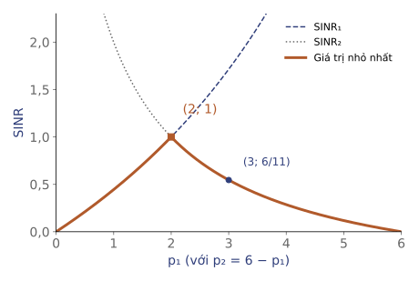
Cùng ngân sách 6, tăng công suất cho đường chịu nhiễu mạnh hơn.
Dạng lồi của bài toán công suất đã có; nghiệm của nó được đọc thành cách chia công suất, chứng minh tối ưu bằng lập luận trực tiếp và so với phương án chia đều (Ví dụ 02.23).
Nghiệm của bài toán theo logarit là $(z_1,z_2,\tau)=(\log2,\log4,0)$; lấy hàm mũ được $p^{\mathrm{opt}}=(2,4)$ và $t^*=1$. Ký hiệu $p^{\mathrm{opt}}$ phân biệt công suất tối ưu với giá trị tối ưu $p^*$. Thay vào mô hình gốc: $\Gamma_1=2/(1+4/4)=1$ và $\Gamma_2=4/(1+3)=1$. Chứng nhận: để đạt ngưỡng 1 cần $p_1\ge1+p_2/4$ và $p_2\ge1+3p_1/2$; thế bất đẳng thức thứ hai vào thứ nhất cho $\tfrac58p_1\ge\tfrac54$, tức $p_1\ge2$, rồi $p_2\ge4$, và ngân sách 6 buộc $p=(2,4)$. Nếu ngưỡng lớn hơn 1, cùng phép thế cho $p_1>2$ và $p_2>4$, mâu thuẫn với ngân sách.
Hình vẽ $\Gamma_1$, $\Gamma_2$ và giá trị nhỏ nhất của chúng theo $p_1$ trên đường $p_2=6-p_1$; giá trị nhỏ nhất đạt cực đại 1 tại $p_1=2$. Chỉ xét đường dùng hết ngân sách là đủ: nếu còn ngân sách, nhân cả hai công suất với cùng một hệ số lớn hơn 1 làm mỗi SINR tăng, vì tạp âm nền dương. Hai đường SINR riêng được cắt ở mức cao; việc cắt không đổi vị trí cực đại. Đường 2 chịu nhiễu mạnh hơn và nhận nhiều công suất hơn. Nguồn bối cảnh: Boyd và Vandenberghe (2004), Bài tập 4.20, tr. 196.
Cả hai ví dụ đều thỏa điều kiện cấu trúc của GP; ba biến thể nhận dạng cuối phần xét những trường hợp các điều kiện đó bị vi phạm.
Bài tập: nhận dạng quy hoạch hình học
Câu hỏi: hai câu đầu xét $x_1,x_2>0$.
1. $x_1+x_2\le x_1x_2$: đưa về dạng chuẩn. Xét cả chiều ngược $x_1+x_2\ge x_1x_2$.
2. $x_1+x_2=1$: có là đẳng thức đơn thức không? Có lồi theo $(x_1,x_2)$ không?
3. $\min x$ với $0\le x\le1$: đổi $x=e^z$ có giữ nghiệm tối ưu không?
Hai ví dụ của phần đều thỏa các điều kiện của GP. Ba câu hỏi kiểm tra giới hạn của phép biến đổi khi đổi chiều bất đẳng thức, dùng đẳng thức không phải đơn thức hoặc cho biến bằng 0.
Gợi ý: ở câu 1, chia hai vế cho đơn thức $x_1x_2$; ở câu 2, tách cấu trúc quy hoạch hình học khỏi tính lồi theo biến ban đầu; ở câu 3, so miền mà $x=e^z$ biểu diễn được với điểm nghiệm.
Nguồn: câu 2 và câu 3 theo Nhận xét 02.34 (giới hạn của phép đổi biến logarit); câu 1 cùng loại với Bài tập 02.7.
Bài tập: nhận dạng quy hoạch hình học
Lời giải:
$x_1+x_2\le x_1x_2\iff 1/x_1+1/x_2\le1$: dạng GP. Chiều $\ge$ nằm ngoài dạng GP và cho tập không lồi.
$x_1+x_2$ là tổng hai đơn thức: không phải đẳng thức GP, nhưng affine nên tập khả thi lồi.
Không: $x^*=0$ nằm ngoài miền $x=e^z>0$; bài toán theo $z$ không đạt cận dưới 0.
Câu 1: chia $x_1+x_2\le x_1x_2$ cho $x_1x_2>0$ được $1/x_1+1/x_2\le1$, đúng dạng GP. Chiều ngược cho $1/x_1+1/x_2\ge1$: một tổng đơn thức dương lớn hơn hoặc bằng 1, không phải chiều của dạng chuẩn, nên phải phân tích riêng. Tập này không lồi theo cả hai cách biểu diễn. Theo $(x_1,x_2)$: $(1,4)$ và $(4,1)$ thỏa $x_1+x_2\ge x_1x_2$, nhưng trung điểm $(2{,}5;\,2{,}5)$ cho $5<6{,}25$. Theo $z=\log x$: $(1,100)$ và $(100,1)$ khả thi, nhưng điểm ứng với trung điểm theo $z$ là trung bình nhân $(10,10)$, cho $20<100$.
Câu 2: $x_1+x_2$ là tổng hai đơn thức, nên $x_1+x_2=1$ không phải đẳng thức GP; sau đổi biến, $\log(e^{z_1}+e^{z_2})=0$ không affine. Tuy vậy $x_1+x_2=1$ là đẳng thức affine theo biến ban đầu và cho tập khả thi lồi trên miền dương. Câu 3: nghiệm của $\min x$ với $0\le x\le1$ là $x^*=0$. Phép đổi $x=e^z$ chỉ biểu diễn $x>0$, nên bài toán mới có cận dưới 0 khi $z\to-\infty$ nhưng không có nghiệm đạt cận. Mỗi phép biến đổi đi kèm điều kiện cấu trúc, điều kiện miền và ánh xạ nghiệm. Nguồn: Boyd và Vandenberghe (2004), §4.5.
Khi bài toán không đưa được về một lớp lồi bằng các phép biến đổi đã học, phần 5 xét hai lựa chọn khác: thay hàm mục tiêu hoặc mở rộng tập khả thi, rồi đánh giá nghiệm thu được theo bài toán gốc.
5. Xấp xỉ lồi và nới lỏngMuốn biết bài toán lồi thay thế bảo đảm gì về bài toán gốc khi không có biến đổi tương đương.
Mất mát đếm lỗi · mất mát bản lề · điều kiện nhị phân · cận dưới
Các trường hợp vi phạm điều kiện cấu trúc của quy hoạch hình học ở cuối phần 4 để lại những bài toán không lồi chưa có biến đổi tương đương. Hai bài toán được xét là số lỗi phân loại theo ngưỡng $\theta$ trên bốn ảnh của dữ liệu chung và mua nguyên gói dữ liệu. Hai cách xử lý được tách bạch: thay mục tiêu bằng một hàm thay thế lồi chặn trên số lỗi, và nới điều kiện nhị phân thành khoảng $[0,1]$ để có cận dưới. Ba quan hệ với bài toán gốc, gồm tương đương, thay mục tiêu và nới lỏng, là đầu vào của phần 6.
Phân loại bằng ngưỡng
Nhu cầu: biết ngưỡng làm nhỏ hàm thay thế lồi bảo đảm gì về số ảnh xếp sai.
$u_i$ $y_i$ Ý nghĩa $-2$ $-1$ nhóm còn lại $-1$ $+1$ nhóm cần tìm $1$ $-1$ nhóm còn lại $2$ $+1$ nhóm cần tìm
Điểm số $u-\theta$; dự đoán theo dấu điểm số.
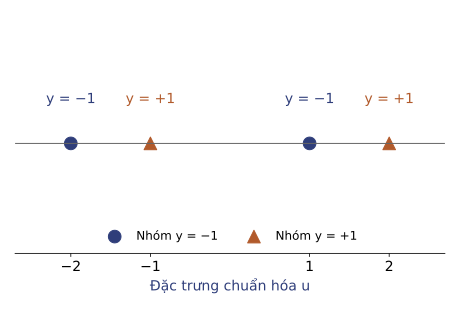
Nhãn xen kẽ trên trục $u$.
Một quyết định trong học máy mở đầu cho hàm thay thế: chọn ngưỡng cho bộ phân loại ảnh. Dữ liệu là bốn ảnh của dữ liệu chung (Ví dụ 02.1(b)).
Bộ phân loại chỉ dùng một đặc trưng đã chuẩn hóa $u$. Nhãn $y=+1$ chỉ nhóm cần tìm, tức lớp dương (positive class); $y=-1$ chỉ nhóm còn lại, tức lớp âm (negative class). Bảng có bốn ảnh với $u=(-2,-1,1,2)$ và $y=(-1,+1,-1,+1)$. Điểm số $u-\theta$ có hệ số của $u$ cố định bằng 1; biến quyết định duy nhất là ngưỡng $\theta\in\mathbb R$. Điểm số dương cho dự đoán nhóm cần tìm, điểm số âm cho dự đoán nhóm còn lại; ảnh có điểm số bằng 0 được tính là xếp sai.
Trên hình, bốn điểm nằm trên trục $u$ với nhãn xen kẽ $-1,+1,-1,+1$ từ trái sang phải. Một ngưỡng chia trục thành hai nửa: các điểm bên trái $\theta$ được dự đoán $-1$, các điểm bên phải được dự đoán $+1$. Với nhãn xen kẽ, không cách chia nào đặt đúng cả bốn điểm, nên số lỗi nhỏ nhất ít nhất là 1. Câu hỏi của phần: một ngưỡng làm hàm thay thế lồi nhỏ nhất có làm số ảnh xếp sai nhỏ nhất không.
Số lỗi phụ thuộc vào ngưỡng theo những bước nhảy; mô hình giảm số lỗi viết đại lượng này thành một hàm của $\theta$.
Mô hình giảm số lỗi phân loại
Biên có dấu (signed margin) $m_i(\theta)=y_i(u_i-\theta)$; mất mát đếm lỗi (0–1 loss):
$$\ell_{01}(m)=\begin{cases}1,&m\le0,\\0,&m>0.\end{cases}$$
$$\min_{\theta\in\mathbb R}\;E(\theta)=\sum_{i=1}^{4}\ell_{01}\big(m_i(\theta)\big).$$
$E$ là hàm bậc thang, không lồi; một ngưỡng không phân loại đúng cả bốn điểm.
Yêu cầu giảm số lỗi được viết thành bài toán tối ưu với mục tiêu $E(\theta)$; đây là tiêu chí gốc để đánh giá mọi phương pháp sau.
Biên có dấu $m_i(\theta)=y_i(u_i-\theta)$ dương khi dấu của điểm số trùng nhãn, tức ảnh được xếp đúng; $m_i\le0$ là lỗi, kể cả $m_i=0$. Mất mát đếm lỗi $\ell_{01}$ bằng 1 khi $m\le0$ và bằng 0 khi $m>0$; tổng $E(\theta)$ là số lỗi trên bốn ảnh. Ví dụ: $\theta=-1{,}5$ chỉ xếp sai ảnh $u=1$, nên $E=1$; $\theta=0$ xếp sai hai ảnh $u=-1$ và $u=1$, nên $E=2$. Xét từng khoảng giữa các điểm dữ liệu, $E=1$ khi $\theta\in(-2,-1)$ hoặc $\theta\in(1,2)$, và $E\ge2$ ở mọi ngưỡng khác (Ví dụ 02.24). Giá trị tối ưu là 1.
Ô kết luận nêu hai tính chất. $E$ là hàm bậc thang, chỉ nhận giá trị nguyên. $E$ không lồi: $E(-1{,}5)=E(1{,}5)=1$ nhưng tại trung điểm $E(0)=2>1$. Tính không lồi này không sửa được bằng đổi biến: một hàm lồi xác định trên $\mathbb R$ và bị chặn phải là hằng, còn $E\circ\varphi$ nhận cả hai giá trị 1 và 2 với mọi song ánh $\varphi$ của $\mathbb R$. Ví dụ nhỏ giải được bằng cách xét từng khoảng ngưỡng; với mô hình nhiều đặc trưng, số vùng cần xét tăng nhanh.
Vì $E$ không đưa được về một lớp lồi bằng các phép biến đổi đã học, hướng xử lý là thay $\ell_{01}$ bằng một hàm lồi luôn nằm trên nó.
Hàm mất mát bản lề
Định nghĩa. Hàm thay thế lồi (convex surrogate) của $\ell_{01}$ là hàm lồi $\ell\ge\ell_{01}$.
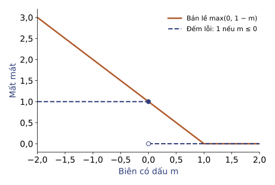
Hàm bản lề chặn trên mất mát đếm lỗi.
$$\ell_{\mathrm{hinge}}(m)=\max(0,1-m)$$
Giá trị lớn nhất của hai hàm affine nên lồi.
$$\ell_{01}(m)\le\ell_{\mathrm{hinge}}(m),\quad m\in\mathbb R.$$
$H(\theta)=\sum_i\ell_{\mathrm{hinge}}(m_i(\theta))$ lồi theo $\theta$.
Hàm đếm lỗi không lồi và không đưa được về một lớp lồi bằng các phép biến đổi đã học. Mất mát bản lề (hinge loss) là một hàm thay thế lồi chặn trên hàm đếm lỗi tại mọi điểm (Định nghĩa 02.35).
Hàm $\ell_{\mathrm{hinge}}(m)=\max(0,1-m)$ là giá trị lớn nhất của hai hàm affine $0$ và $1-m$, nên lồi. Bất đẳng thức $\ell_{01}(m)\le\ell_{\mathrm{hinge}}(m)$ đúng với mọi $m$: khi $m\le0$, $\ell_{01}=1\le1-m\le\ell_{\mathrm{hinge}}(m)$; khi $m>0$, $\ell_{01}=0\le\ell_{\mathrm{hinge}}(m)$. Trên hình, trục hoành là biên có dấu $m$; hàm đếm lỗi là bậc thang; hàm bản lề giảm tuyến tính đến 0 tại $m=1$ rồi giữ bằng 0. Tại $m=0$ hai hàm cùng bằng 1. Hàm bản lề còn phạt cả các ảnh xếp đúng nhưng có biên nhỏ, $0<m<1$.
Thay từng số hạng trong $E$ được $H(\theta)=\sum_i\ell_{\mathrm{hinge}}(m_i(\theta))$. Mỗi số hạng là hợp của hàm lồi với hàm affine $\theta\mapsto y_i(u_i-\theta)$, nên lồi theo $\theta$; tổng các hàm lồi là lồi. Từ bất đẳng thức từng điểm suy ra $E(\theta)\le H(\theta)$ với mọi $\theta$. Giá trị $H(\theta)$ không phải số lỗi. Nguồn: Murphy (2022), §4.3.2; Boyd và Vandenberghe (2004), Convex Optimization , §8.6.1, tr. 425–427.
Thay $E$ bằng $H$ là đổi mục tiêu, không có ánh xạ khôi phục nghiệm; cần xác định căn cứ của việc đổi mục tiêu và việc phải kiểm chứng sau khi đổi.
Hàm thay thế trong thiết kế phương pháp học
Lưu ý: đổi mục tiêu phải được kiểm chứng theo ba thành phần.
Thành phần Điều kiện kiểm chứng
Cơ sở toán học $H$ lồi và $E(\theta)\le H(\theta)$ với mọi $\theta$ Lựa chọn tính toán $\min_\theta H$ viết được thành LP tương đương Kiểm chứng bằng dữ liệu $E$ tại nghiệm của $H$; số lỗi trên tập kiểm định
Mục đích của bộ phân loại là dự đoán đúng trên dữ liệu chưa thấy; số lỗi huấn luyện chỉ là đại diện (Nhận xét 02.37). Bất đẳng thức $E\le H$ đúng tại mọi ngưỡng, nhưng $\min H$ trên dữ liệu huấn luyện không cho số lỗi trên dữ liệu mới.
Căn cứ toán học: $H$ lồi và $E\le H$ tại mọi ngưỡng, nên $\min E\le\min H$, và $H=0$ kéo theo $E=0$ trên dữ liệu huấn luyện (Mệnh đề 02.36). Căn cứ tính toán: $\min_\theta H$ viết được thành LP tương đương. Kiểm chứng: số lỗi $E$ được tính lại tại nghiệm của $H$, và số lỗi trên dữ liệu chưa thấy được đo trên tập kiểm định (validation set). Nhầm lẫn thường gặp là báo cáo giá trị $H$ như số lỗi.
Câu hỏi: đạt giá trị tối ưu của $H$ đã đủ kết luận mô hình tốt chưa? Lời giải: chưa; cần tính số lỗi $E$ tại nghiệm và đo trên tập kiểm định. Nguồn: Murphy (2022), §4.3.2; Goodfellow, Bengio và Courville (2016), Deep Learning , §5.2–5.3.
Khi đã chọn $H$ làm mục tiêu, biến phụ viết $\min_\theta H$ thành một LP tương đương với bài toán theo $H$.
Biến đổi bài toán hàm bản lề thành LP
Biến phụ $\xi_i$ biểu diễn từng số hạng bản lề.
$$\begin{aligned}
\min_{\theta,\,\xi}\;&\sum_{i=1}^{4}\xi_i\\
\text{subject to}\quad &\xi_i\ge1-y_i(u_i-\theta),\quad i=1,\ldots,4,\\
&\xi_i\ge0,\quad i=1,\ldots,4.
\end{aligned}$$
LP này tương đương với $\min_\theta H$; quan hệ giữa $H$ và $E$ vẫn là thay mục tiêu.
Hàm bản lề là tổng các giá trị lớn nhất của hàm affine, đúng cấu trúc đã gặp ở hồi quy sai số tuyệt đối. Kỹ thuật biến phụ của phần 2 viết $\min_\theta H(\theta)$ thành một LP (Mệnh đề 02.36(c)).
Biến gồm ngưỡng $\theta$ và bốn biến phụ $\xi_1,\ldots,\xi_4$, một biến cho mỗi số hạng bản lề. Hai ràng buộc $\xi_i\ge1-m_i(\theta)$ và $\xi_i\ge0$ tương đương $\xi_i\ge\ell_{\mathrm{hinge}}(m_i(\theta))$; bài toán có 5 biến và 8 bất đẳng thức tuyến tính. Tương đương với $\min_\theta H$: với mọi $\theta$, $\varphi(\theta)=(\theta,\xi)$ với $\xi_i=\ell_{\mathrm{hinge}}(m_i(\theta))$ cho điểm khả thi có mục tiêu $H(\theta)$; với mọi điểm khả thi, $\sum_i\xi_i\ge H(\theta)$, và $\psi(\theta,\xi)=\theta$. Do đó giá trị tối ưu của LP bằng $\min_\theta H$, và khối $\theta$ của nghiệm LP là nghiệm của bài toán theo $H$.
Ô kết luận tách hai quan hệ: LP và $H$ tương đương chính xác; $H$ và $E$ là thay mục tiêu, và bước thêm biến phụ không hoàn tác việc thay đó. Giá trị tối ưu của LP là giá trị của $H$, không phải số lỗi $E$. Nguồn: Boyd và Vandenberghe (2004), Convex Optimization , §8.6.1, tr. 425–427.
Giải LP này cho nghiệm của $H$; đánh giá $E$ tại các nghiệm đó cho biết hàm thay thế có giữ được nghiệm của bài toán gốc hay không.
Nghiệm của hàm thay thế
$\theta$ $H(\theta)$ $E(\theta)$ $-1{,}5$ $4{,}5$ $1$ $0$ $4$ $2$
$$\min_{\theta\in\mathbb R}H(\theta)=4.$$
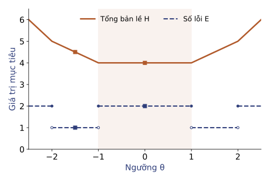
$H$ lồi, $E$ bậc thang; mọi $\theta\in[-1,1]$ tối ưu cho $H$.
Tối ưu $H$ không bảo đảm giảm số lỗi $E$ nhiều nhất.
Bài toán $\min_\theta H$ đã có LP tương đương. Nghiệm của $H$ trên bốn ảnh được tính, rồi số lỗi $E$ được đánh giá tại đó, để kiểm tra lập luận "kéo $H$ xuống thì $E$ cũng xuống" (Ví dụ 02.25).
Bảng cho hai ngưỡng: $\theta=-1{,}5$ có $H=4{,}5$, $E=1$; $\theta=0$ có $H=4$, $E=2$. Ngưỡng có $H$ nhỏ hơn lại có nhiều lỗi hơn. Chứng minh $\min H=4$: bốn số hạng bản lề là $\max(0,-1-\theta)$, $\max(0,2+\theta)$, $\max(0,2-\theta)$ và $\max(0,\theta-1)$. Hai số hạng giữa có tổng ít nhất $(2+\theta)+(2-\theta)=4$ với mọi $\theta$. Trên $[-1,1]$, tổng đó bằng đúng 4 và hai số hạng ngoài bằng 0; ngoài đoạn này, ít nhất một số hạng ngoài dương, nên $H>4$. Vậy tập nghiệm của $H$ là đoạn $[-1,1]$. Trên hình, trục hoành là $\theta$; $H$ là đường gấp khúc lồi có đáy phẳng trên $[-1,1]$, còn $E$ là bậc thang.
Mọi $\theta\in[-1,1]$ đều có $E=2$, trong khi giá trị tối ưu của $E$ là 1, đạt tại $\theta=-1{,}5$. Như vậy không nghiệm nào của hàm thay thế tối ưu cho bài toán gốc. Từ $E\le H$ chỉ suy ra $\min E\le\min H$, ở đây $1\le4$: $\min H$ là một cận trên của $\min E$. Số lỗi của một nghiệm đã học phải được tính lại bằng $E$.
Ví dụ một đặc trưng đủ nhỏ để kiểm tra bằng tay; mô hình phân loại nhiều đặc trưng giữ cùng hàm bản lề và biến phụ, thêm một số hạng phạt bậc hai theo hệ số.
Phân loại nhiều đặc trưng
$u_i\in\mathbb R^d$, $y_i\in\{\pm1\}$, $i=1,\ldots,N$; chọn trước $\lambda\ge0$.
$$\begin{aligned}
\min_{w,w_0,\,\xi}\;&\frac{\lambda}{2}\|w\|_2^2+\sum_{i=1}^{N}\xi_i\\
\text{subject to}\quad &y_i(w^Tu_i+w_0)\ge1-\xi_i,\quad i=1,\ldots,N,\\
&\xi_i\ge0,\quad i=1,\ldots,N.
\end{aligned}$$
Hessian $\operatorname{diag}(\lambda I,0,0)$ nửa xác định dương, ràng buộc affine: bài toán QP; khi $\lambda=0$ thành LP.
Mô hình một ngưỡng chỉ dùng để kiểm tra bằng tay. Bộ phân loại tuyến tính nhiều đặc trưng có chính quy hóa dùng lại chứng nhận QP của phần 3 và biến phụ bản lề vừa xây dựng.
Dữ liệu gồm $N$ mẫu $u_i\in\mathbb R^d$ với nhãn $y_i\in\{\pm1\}$; tham số $\lambda\ge0$ do người lập mô hình chọn trước. Biến là $w\in\mathbb R^d$, hệ số chặn $w_0\in\mathbb R$ và $\xi\in\mathbb R^N$. Khi $\lambda>0$, bài toán là máy vector hỗ trợ lề mềm (soft-margin support vector machine, soft-margin SVM; Định nghĩa 02.38) với mục tiêu $H_\lambda(w,w_0)=\tfrac\lambda2\|w\|_2^2+H(w,w_0)$. Điểm số $w^Tu_i+w_0$ thay cho $u_i-\theta$; hai ràng buộc $y_i(w^Tu_i+w_0)\ge1-\xi_i$ và $\xi_i\ge0$ tương đương $\xi_i\ge\ell_{\mathrm{hinge}}(y_i(w^Tu_i+w_0))$. Theo thứ tự biến $(w,w_0,\xi)$, Hessian là $\operatorname{diag}(\lambda I_d,0,0_N)\succeq0$ và mọi ràng buộc affine, nên bài toán là QP lồi (Mệnh đề 02.39). Với $d=1$, $w=1$ và $w_0=-\theta$ cho lại mô hình ngưỡng.
Đây là biến đổi tương đương của bài toán $\min H_\lambda$, không phải của số lỗi: tại nghiệm $\xi_i=\ell_{\mathrm{hinge}}(y_i(w^Tu_i+w_0))$. Hệ số chặn $w_0$ không bị phạt, nên mục tiêu không lồi chặt theo $w_0$. Nguồn: Murphy (2022), §17.3.3; Boyd và Vandenberghe (2004), §8.6.1, tr. 425–427.
Ví dụ phân loại thay hàm mục tiêu; ví dụ chọn gói dữ liệu giữ nguyên mục tiêu chi phí, và khó khăn nằm ở miền khả thi rời rạc.
Chọn các gói dữ liệu
Nhu cầu: ảnh gán nhãn cho bộ nhận diện người đi bộ, đủ ba bối cảnh, chi phí thấp nhất.
Gói Ảnh có sẵn Giá (triệu đồng) 1 Ngày khô, đêm khô 2 2 Đêm khô, trời mưa 2 3 Ngày khô, trời mưa 2
Giả thiết: mua trọn gói, mỗi gói tối đa một lần.
Bài toán phân loại có mục tiêu không lồi. Bài toán chọn gói có mục tiêu tuyến tính nhưng quyết định là mua hay không mua từng gói, nên khó khăn nằm ở tập khả thi (Ví dụ 02.27).
Một nhóm phát triển mô hình nhận diện người đi bộ cần ảnh giao thông đã gán nhãn cho ba bối cảnh: ngày khô, đêm khô và trời mưa. Ngày khô và đêm khô đều là lúc không mưa; nhóm trời mưa gồm mọi ảnh chụp khi mưa. Bảng cho ba gói, mỗi gói chứa ảnh của hai bối cảnh và giá 2 triệu đồng. Ba gói chứa dữ liệu riêng, nên hai gói cùng phủ một bối cảnh không có nghĩa là ảnh trùng nhau.
Ô kết luận nêu luật mua: chỉ mua trọn gói, mỗi gói tối đa một lần; mục tiêu là đủ ba bối cảnh với chi phí thấp nhất, và mô hình chỉ đòi mỗi bối cảnh có trong ít nhất một gói đã mua. Mua cả ba gói thì đủ nhưng tốn 6 triệu đồng. Nguồn: phỏng theo Boyd và Vandenberghe (2004), Bài tập 4.15, tr. 193.
Luật mua trọn gói được viết bằng biến nhị phân, và mỗi yêu cầu bối cảnh thành một bất đẳng thức tuyến tính trong mô hình chọn gói.
Mô hình chọn gói dữ liệu
$x_j=1$ nếu mua trọn gói $j$, $x_j=0$ nếu không mua, $j=1,2,3$.
$$\begin{aligned}
\min_{x}\;&2(x_1+x_2+x_3)\\
\text{subject to}\quad &x_1+x_3\ge1,\quad x_1+x_2\ge1,\quad x_2+x_3\ge1,\\
&x_j\in\{0,1\},\quad j=1,2,3.
\end{aligned}$$
Chi phí tính bằng triệu đồng; ba bất đẳng thức ứng với ngày khô, đêm khô, trời mưa.
Ảnh ngày khô có trong gói 1 hoặc gói 3, nên có ràng buộc phủ $x_1+x_3\ge1$.
Bài toán chọn gói được viết thành mô hình chính xác; mỗi biến và mỗi ràng buộc được giải nghĩa bằng nội dung các gói, và điều kiện nhị phân làm mô hình không phải LP.
Biến $x_j\in\{0,1\}$ bằng 1 nếu mua trọn gói $j$ và bằng 0 nếu không mua. Chi phí $2(x_1+x_2+x_3)$ triệu đồng là hàm affine. Mỗi bối cảnh cho một ràng buộc phủ: ảnh ngày khô có trong gói 1 hoặc gói 3, nên cần $x_1+x_3\ge1$; tương tự, đêm khô cho $x_1+x_2\ge1$ và trời mưa cho $x_2+x_3\ge1$. Số 1 ở vế phải nghĩa là cần ít nhất một gói chứa bối cảnh đó. Cách tiếp cận trực tiếp là liệt kê $2^3=8$ phương án. Tập khả thi chỉ gồm $(1,1,0)$, $(1,0,1)$, $(0,1,1)$ và $(1,1,1)$, với chi phí 4, 4, 4 và 6 triệu đồng. Với $n$ gói, số phương án là $2^n$.
Mục tiêu và ràng buộc phủ đều affine, nhưng mô hình không phải quy hoạch tuyến tính, vì biến bị giới hạn nhị phân. Tập khả thi rời rạc và không lồi: trung điểm của $(1,1,0)$ và $(1,0,1)$ là $(1;\,0{,}5;\,0{,}5)$, không nhị phân. Nguồn gốc của tính không lồi nằm ở miền khả thi.
Giữ nguyên mục tiêu và ba ràng buộc phủ, chỉ thay điều kiện nhị phân bằng một khoảng liên tục, được một LP; đó là phép nới lỏng.
Nới lỏng điều kiện nhị phân
Bài toán gốc, tập khả thi $\mathcal F$: $x_j\in\{0,1\}$.
Bài toán nới lỏng, tập khả thi $\tilde{\mathcal F}$: $0\le x_j\le1$.
$$\begin{aligned}
\min_{x}\;&2(x_1+x_2+x_3)\\
\text{subject to}\quad &x_1+x_3\ge1,\;\;x_1+x_2\ge1,\;\;x_2+x_3\ge1,\\
&0\le x_j\le1,\quad j=1,2,3.
\end{aligned}$$
Giữ mục tiêu và các ràng buộc phủ: $\mathcal F\subseteq\tilde{\mathcal F}$, bài toán nới lỏng là LP.
Lưu ý: nhà cung cấp vẫn bán nguyên gói.
Mô hình chọn gói không lồi chỉ vì điều kiện nhị phân. Chỉ điều kiện nhị phân được thay bằng khoảng $[0,1]$; bài toán thu được với cùng mục tiêu và tập khả thi lớn hơn gọi là một nới lỏng (relaxation; Định nghĩa 02.41), ở đây là nới lỏng tuyến tính (LP relaxation).
Hai thẻ trên trang so sánh điều kiện của biến: bài toán gốc dùng $x_j\in\{0,1\}$, bài toán nới lỏng dùng $0\le x_j\le1$. Mục tiêu và ba ràng buộc phủ giữ nguyên. Mọi phương án nhị phân khả thi đều thỏa các ràng buộc của bài toán nới lỏng, nên $\mathcal F\subseteq\tilde{\mathcal F}\subseteq\mathbb R^3$. Tập $\tilde{\mathcal F}$ là giao của các nửa không gian, nên lồi; mọi ràng buộc affine, biến liên tục, mục tiêu affine, nên bài toán nới lỏng là một LP.
Hệ quả chính: làm nhỏ cùng một hàm trên tập lớn hơn không thể cho giá trị lớn hơn, nên $p^*_{\tilde{\mathcal F}}\le p^*_{\mathcal F}$ với mục tiêu $f_0(x)=2\sum_jx_j$ (Mệnh đề 02.42(a)). Ô kết luận tách mô hình khỏi giao dịch: chỉ mô hình được nới lỏng, nhà cung cấp vẫn bán nguyên gói. Giá trị $x_j=0{,}5$ là giá trị của biến trong bài toán nới lỏng, không phải tỷ lệ ảnh hay xác suất mua.
Bài toán nới lỏng là một LP nhỏ; nghiệm của nó cho một cận dưới chi phí, và có thể không ứng với phương án mua nào.
Nghiệm phân số của bài toán nới lỏng
$$\tilde x=\left(\tfrac12,\tfrac12,\tfrac12\right)$$
$$2\left(\tfrac12+\tfrac12+\tfrac12\right)=3$$
Bối cảnh Kiểm tra Ngày khô $x_1+x_3=\tfrac12+\tfrac12=1$ Đêm khô $x_1+x_2=\tfrac12+\tfrac12=1$ Trời mưa $x_2+x_3=\tfrac12+\tfrac12=1$
Bài toán nới lỏng đạt chi phí 3 triệu đồng tại $\tilde x$ không nhị phân, nên $\tilde x$ không là phương án mua.
Bài toán nới lỏng là LP. Giá trị tối ưu của nó chứng minh được bằng một tổ hợp các ràng buộc, và nghiệm thu được không phải một phương án mua (Ví dụ 02.28).
Cộng ba bất đẳng thức phủ vế theo vế: $(x_1+x_3)+(x_1+x_2)+(x_2+x_3)\ge3$, tức $2(x_1+x_2+x_3)\ge3$; mọi điểm khả thi của bài toán nới lỏng có chi phí ít nhất 3 triệu đồng. Đây là tổ hợp không âm của Mệnh đề 02.11 với $\mu=(1,1,1)$. Điểm $\tilde x=(1/2,1/2,1/2)$ nằm trong $[0,1]^3$ và thỏa cả ba ràng buộc với dấu bằng, như bảng kiểm tra cho thấy, với chi phí $2(1/2+1/2+1/2)=3$. Hai chiều kết hợp cho $\tilde x$ là nghiệm của LP và $p^*_{\tilde{\mathcal F}}=3$ triệu đồng.
Ô kết luận nêu hai điều: giá trị 3 là cận dưới cho chi phí của mọi phương án mua nguyên gói; nghiệm $\tilde x$ có ba tọa độ bằng một nửa, chỉ có nghĩa trong bài toán nới lỏng, vì nhà cung cấp không bán lẻ.
Từ nghiệm phân số cần dựng một phương án mua nguyên gói và kiểm tra lại ba yêu cầu bối cảnh cho phương án đó.
Khôi phục phương án mua
Xác định phương án mua nguyên gói từ $\tilde x=(1/2,1/2,1/2)$.
Phương án Đủ ba bối cảnh Chi phí (triệu đồng) Làm tròn xuống: $(0,0,0)$ Không 0 Làm tròn lên: $(1,1,1)$ Có 6 Bỏ gói 3: $(1,1,0)$ Có 4
Diễn giải: gói 1 và gói 2 đã phủ đủ ba bối cảnh.
Nghiệm của bài toán nới lỏng là phân số. Phương án mua nguyên gói được dựng từ nghiệm đó, và mỗi phương án được kiểm tra theo ba ràng buộc phủ của bài toán gốc.
Làm tròn xuống cho $(0,0,0)$: không mua gói nào, cả ba bối cảnh đều thiếu, nên không khả thi dù chi phí 0. Làm tròn lên cho $(1,1,1)$: đủ ba bối cảnh với chi phí 6 triệu đồng; ở bài toán phủ, mua thêm gói không làm mất phủ, nên làm tròn lên khả thi nhưng tốn hơn mức cần. Bỏ gói 3 khỏi $(1,1,1)$ được $(1,1,0)$: gói 1 cung cấp ngày khô và đêm khô, gói 2 bổ sung trời mưa. Kiểm tra: $x_1+x_3=1$, $x_1+x_2=2$, $x_2+x_3=1$, đều không nhỏ hơn 1, nên phương án khả thi với chi phí 4 triệu đồng.
Nghiệm $\tilde x$ đối xứng nên không chỉ ra phải bỏ gói nào; bỏ gói 3 là một lựa chọn, và mỗi lựa chọn phải được kiểm tra lại các ràng buộc. Làm tròn xuống cho phương án không khả thi, làm tròn lên cho phương án không tối ưu.
Phương án $(1,1,0)$ cho cận trên 4 triệu đồng, bài toán nới lỏng cho cận dưới 3 triệu đồng; hai cận này cùng một tính chất của chi phí đủ để chứng nhận phương án tối ưu.
Cận dưới và chứng nhận nghiệm
Ký hiệu: $p^*_{\mathcal F}$ là chi phí nhỏ nhất khi mua nguyên gói (triệu đồng).
Tối ưu LP cho $p^*_{\mathcal F}\ge3$; gói 1 và gói 2 cho $p^*_{\mathcal F}\le4$.
$$3\le p^*_{\mathcal F}\le4$$
Chi phí nguyên gói là bội của 2; trong $[3,4]$ chỉ có 4.
Phương án mua gói 1 và gói 2 là tối ưu.
Bài toán nới lỏng cho cận dưới 3 triệu đồng và phương án gói 1, gói 2 có chi phí 4 triệu đồng; hai con số này ghép lại thành một chứng nhận tối ưu cho bài toán gốc.
Thẻ trái cho khoảng $3\le p^*_{\mathcal F}\le4$: cận dưới 3 là giá trị tối ưu của LP, cận trên 4 là chi phí của phương án gói 1 cộng gói 2. Khung tổng quát (Mệnh đề 02.42(d)): với $\mathcal F\subseteq\tilde{\mathcal F}$ và một phương án $\hat x\in\mathcal F$, $$p^*_{\tilde{\mathcal F}}\le p^*_{\mathcal F}\le f_0(\hat x),$$ nên khoảng cách từ $f_0(\hat x)$ tới giá trị tối ưu không vượt $f_0(\hat x)-p^*_{\tilde{\mathcal F}}$. Quan hệ cận đến từ bao hàm $\mathcal F\subseteq\tilde{\mathcal F}$; tính lồi của $\tilde{\mathcal F}$ cho phép giải bài toán nới lỏng bằng công cụ tối ưu lồi.
Thẻ phải khép khoảng bằng cấu trúc chi phí: mỗi gói giá 2 triệu đồng, nên mọi chi phí mua nguyên gói là bội của 2, và trong $[3,4]$ chỉ có 4 là bội của 2. Do đó $p^*_{\mathcal F}=4$ và phương án mua gói 1 và gói 2 tối ưu. Với giá khác nhau, khoảng $[p^*_{\tilde{\mathcal F}},f_0(\hat x)]$ có thể chứa nhiều giá trị khả dĩ, và cần liệt kê hoặc một phương pháp khác. Nguồn: Boyd và Vandenberghe (2004), Bài tập 4.15, tr. 193.
Hai ví dụ của phần đã dùng ba quan hệ khác nhau với bài toán gốc; bảng phân biệt ba cách xử lý đặt chúng cạnh nhau.
Phân biệt ba cách xử lý
Cách xử lý Bảo toàn Ý nghĩa nghiệm Biến đổi tương đương Giá trị $H$ Khôi phục ngưỡng tối ưu cho $H$ Hàm thay thế ($E\to H$) Không giữ mục tiêu Đánh giá $E$ riêng tại nghiệm đã học Nới lỏng ($\mathcal F\to\tilde{\mathcal F}$) Giữ mục tiêu; mở rộng miền Cần khôi phục phương án
Biến đổi tương đương, thay mục tiêu và nới lỏng cho ba loại quan hệ khác nhau giữa bài toán được giải và bài toán gốc, đặt cạnh nhau trên chính hai ví dụ vừa học (Nhận xét 02.43).
Hàng thứ nhất là biến đổi tương đương từ $H$ sang LP: ánh xạ $\psi(\theta,\xi)=\theta$ cho đúng ngưỡng tối ưu của $H$. Hàng thứ hai là hàm thay thế từ $E$ sang $H$: mục tiêu đã đổi, chỉ còn bất đẳng thức $E\le H$; số lỗi phải được tính riêng tại nghiệm đã học, như ví dụ bốn ảnh cho thấy. Hàng thứ ba là nới lỏng từ $\mathcal F$ sang $\tilde{\mathcal F}$: mục tiêu giữ nguyên, miền được mở rộng; giá trị tối ưu LP cho cận dưới của bài toán gốc, còn nghiệm phân số phải được khôi phục và kiểm tra lại.
Ba quan hệ cho ba loại thông tin: một nghiệm đúng, một nghiệm cần đánh giá lại, và một cận. Ba nhầm lẫn thường gặp: gọi hàm thay thế hay nới lỏng là biến đổi tương đương; đọc giá trị của nới lỏng như giá trị của bài toán gốc; coi chi phí của một điểm khả thi là cận dưới.
Ba câu hỏi kiểm tra cuối phần thay đổi giả thiết để kiểm tra cách đánh giá một nghiệm hoặc một con số theo chính bài toán gốc.
Bài tập: đánh giá nghiệm theo bài toán gốc
Câu hỏi:
Nếu $H(\hat\theta)=0$ tại ngưỡng đã học $\hat\theta$: kết luận gì về $E(\hat\theta)$ và về dữ liệu mới?
Phương án khả thi LP với chi phí 6: có phải cận dưới của bài toán gốc không?
Nếu nghiệm tối ưu LP đã nhị phân thì kết luận gì?
Ba câu hỏi kiểm tra việc đọc đúng loại bảo đảm sau khi thay mục tiêu hoặc nới lỏng, bằng cách thay một giả thiết trong hai ví dụ của phần.
Gợi ý: dùng $0\le E\le H$; phân biệt giá trị tại một điểm khả thi với giá trị tối ưu của bài toán nới lỏng; dùng bao hàm $\mathcal F\subseteq\tilde{\mathcal F}$ giữa hai tập khả thi.
Nguồn: câu 1 theo Mệnh đề 02.36(b); câu 2 theo nhầm lẫn thứ ba của Nhận xét 02.43; câu 3 là Mệnh đề 02.42(c). Bài cùng loại: Bài tập 02.11(c).
Bài tập: đánh giá nghiệm theo bài toán gốc
Lời giải:
$0\le E(\hat\theta)\le H(\hat\theta)=0$ nên $E(\hat\theta)=0$; không có bảo đảm trên dữ liệu mới.
Không: $(1,1,1)$ khả thi nên 6 là cận trên; cận dưới là tối ưu LP, bằng 3.
Nghiệm LP nhị phân khả thi cho bài toán gốc và đạt cận dưới, nên tối ưu.
Câu 1: với một tập dữ liệu khác có $H=0$ tại nghiệm, vì $0\le E\le H$ nên số lỗi trên tập huấn luyện bằng 0. Số lỗi trên dữ liệu mới phải được đo, chẳng hạn trên tập kiểm định. Câu 2: trong ví dụ, điểm chi phí 6 là $(1,1,1)$, khả thi cho cả bài toán gốc, nên 6 là một cận trên của $p^*_{\mathcal F}$. Một điểm chỉ khả thi cho LP không cho cận trên của bài toán gốc, và giá trị tại một điểm khả thi bất kỳ không cho cận dưới; chỉ giá trị tối ưu LP, bằng 3, là cận dưới.
Câu 3: nếu nghiệm tối ưu LP đã nhị phân thì nó khả thi cho bài toán gốc và chi phí của nó bằng cận dưới, nên nó tối ưu cho bài toán gốc (Mệnh đề 02.42(c)). Trong ví dụ nghiệm LP là phân số, nên cần bước khôi phục và chứng nhận bằng tính chất bội của 2.
Phần 6 dùng lại các lớp bài toán, phép biến đổi và cách đánh giá nghiệm của phần 1 đến phần 5 cho một biến thể mới của bộ phân loại.
6. Tổng hợp và vận dụngNhu cầu: áp dụng trọn chu trình nhận dạng, biến đổi và chứng nhận cho một bài toán mới.
Bảng các lớp bài toán · chứng nhận bốn bước · giới hạn số đặc trưng · số hạng phạt chuẩn một
Ba quan hệ của phần 5 và các lớp bài toán đã học được gom vào hai trang ôn tập và một quy trình chứng nhận bốn bước. Quy trình này được áp dụng cho bộ phân loại bản lề chỉ được dùng tối đa $k$ đặc trưng: ràng buộc đếm làm miền không lồi, còn số hạng phạt chuẩn một cho mô hình thay thế lồi nhưng không bảo đảm giới hạn $k$. Mạch kết thúc bằng bài tập có lời giải và bảng tổng kết kết quả, giả thiết và công thức gắn với sáu mục tiêu của bài.
Các dạng bài toán đã học
Ký hiệu: $x\in\mathbb R^n$; $f_i(x)=\tfrac12 x^TP_ix+q_i^Tx+\rho_i$, $P_i=P_i^T$; $i=0$ cho mục tiêu, $i\ge1$ cho bất đẳng thức.
Dạng Mục tiêu và ràng buộc Chứng nhận
LP $\min c^Tx$ với $Gx\le h,\ Ax=b$ hàm affine, tập khả thi là đa diện lồi QP $\min f_0(x)$ với $Gx\le h,\ Ax=b$ $P_0\succeq 0$ QCQP $\min f_0(x)$ với $f_i(x)\le 0$ ($i=1,\dots,m$), $Ax=b$ $P_i\succeq 0$ với mọi $i=0,\dots,m$
Chứng nhận cả hàm mục tiêu và tập khả thi.
Ba lớp bài toán lồi của phần 2 và phần 3 được viết trong một bảng với cùng ký hiệu.
Ký hiệu chung $f_i(x)=\tfrac12x^TP_ix+q_i^Tx+\rho_i$ với $P_i=P_i^T\in\mathbb R^{n\times n}$, $q_i\in\mathbb R^n$, $\rho_i\in\mathbb R$; chỉ số $i=0$ dành cho mục tiêu và $i=1,\ldots,m$ cho các bất đẳng thức bậc hai. Trong các hàng LP và QP, $c\in\mathbb R^n$, $G$ có $n$ cột và $h$ có số hàng bằng số bất đẳng thức tuyến tính; $A\in\mathbb R^{p\times n}$, $b\in\mathbb R^p$. LP có mục tiêu affine và tập khả thi là đa diện lồi. QP thêm phần bậc hai vào mục tiêu, cần $P_0\succeq0$. QCQP cho phép cả bất đẳng thức bậc hai, cần $P_i\succeq0$ với mọi $i=0,\ldots,m$. Ba lớp lồng nhau: LP là trường hợp $P_i=0$, QP là trường hợp $P_i=0$ với $i\ge1$.
Các ví dụ đã học ứng với bảng như sau: bài toán pha trộn, hồi quy sai số tuyệt đối, hồi quy minimax và tổ hợp $\ell_1+\ell_1$ là LP; bình phương nhỏ nhất và ba tổ hợp chính quy hóa còn lại là QP; hồi quy với ràng buộc chặn chuẩn là QCQP. Các mô hình trong bảng lồi theo biến đang dùng, có thể sau khi thêm biến phụ.
Quy hoạch hình học không có trong bảng vì nói chung nó không lồi theo biến ban đầu; chứng nhận tương tự chỉ có sau phép đổi biến logarit.
Quy hoạch hình học và đổi biến
Dạng chuẩn GP
$$\begin{aligned}
\min_{x>0}\ & f_0(x)\\
\text{subject to}\quad & f_i(x)\le 1,\\
& g_j(x)=1
\end{aligned}$$
$f_i$: tổng đơn thức dương; $g_j$: đơn thức.
Sau đổi biến $z=\log x$
$$\begin{aligned}
\min_{z\in\mathbb R^n}\ & \log f_0(e^z)\\
\text{subject to}\quad & \log f_i(e^z)\le 0,\\
& \log g_j(e^z)=0
\end{aligned}$$
Sau đổi biến: mục tiêu và các bất đẳng thức lồi, các đẳng thức affine.
LP, QP và QCQP lồi theo biến đang dùng. Quy hoạch hình học cần thêm một bước đổi biến, nên dạng GP trước và sau đổi biến được đặt cạnh nhau.
Thẻ trái là dạng chuẩn GP với $x>0$: $f_i$ là tổng đơn thức dương, $g_j$ là đơn thức, cùng ký hiệu với phần 4. Thẻ phải là bài toán sau khi đặt $z=\log x$, tức $x=e^z$ theo từng thành phần, với miền mới là toàn bộ $\mathbb R^n$. Mỗi đơn thức trở thành hàm mũ của một hàm affine của $z$, nên logarit của nó affine và các đẳng thức trở thành affine. Mỗi tổng đơn thức dương trở thành tổng các hàm mũ của hàm affine, và logarit của tổng đó là hàm logarit tổng hàm mũ, lồi. Điều kiện áp dụng là biến dương và hệ số dương.
Quan hệ nghiệm: nếu $z^*$ là nghiệm của dạng lồi thì $x^*=e^{z^*}$ là nghiệm của GP gốc, và $f_0(x^*)=e^{F_0(z^*)}$ (Định lý 02.33). Bài toán hộp kín có thể tích cho trước, và bài toán phân bổ công suất của phần đọc thêm, đều đưa được về dạng này. Nguồn: Boyd và Vandenberghe (2004), Convex Optimization , §4.5.
Bảng các lớp bài toán và phép đổi biến được gom lại thành một quy trình chứng nhận bốn bước áp dụng cho mọi bài toán mới.
Chứng nhận một bài toán lồi
Xác định biến và miền xác định.
Chứng minh $f_0$ lồi: Hessian $\succeq0$ hoặc phép toán bảo toàn tính lồi.
Chứng minh tập khả thi lồi: hàm lồi $\le 0$, đẳng thức affine.
Khi biến đổi: nêu quan hệ với bài toán gốc và cách khôi phục nghiệm.
Câu hỏi: mục tiêu lồi đã đủ để kết luận bài toán lồi chưa?
Các lớp LP, QP, QCQP và GP cho chung một quy trình chứng nhận bốn bước, dùng cho mọi mô hình, kể cả biến thể giới hạn số đặc trưng ngay sau đó. Bốn bước là bản gọn của Thuật toán 02.44 trong ghi chú.
Bước 1 xác định biến và miền xác định; hàm nghịch đảo và quy hoạch hình học đòi biến dương. Bước 2 chứng minh $f_0$ lồi, bằng Hessian nửa xác định dương hoặc bằng các phép toán bảo toàn tính lồi của Bài 01. Tiêu chuẩn Hessian đòi hàm lớp $C^2$ trên một miền mở lồi; khi hàm không khả vi, dùng các phép toán bảo toàn tính lồi: trị tuyệt đối $|x|=\max(x,-x)$, hàm bản lề là cực đại của hai hàm affine; với GP, bước này đi cùng phép đổi biến và tính lồi của logarit tổng hàm mũ. Bước 3 chứng minh tập khả thi lồi: mỗi bất đẳng thức có dạng hàm lồi nhỏ hơn hoặc bằng 0, mỗi đẳng thức affine; một $f_i$ không lồi chưa cho kết luận tập khả thi không lồi, vì tập đó có thể lồi qua một biểu diễn khác. Bước 4, khi có biến đổi bài toán, nêu các ánh xạ $\varphi$, $\psi$ của biến đổi tương đương, hoặc bảo đảm một chiều của hàm thay thế, số hạng phạt hay nới lỏng.
Câu hỏi trên trang: mục tiêu lồi đã đủ kết luận bài toán lồi chưa? Lời giải: chưa; phải xét cả miền xác định và tập khả thi. Ví dụ ở phần 3: tổng bình phương phần dư $J(w)$ lồi, nhưng thêm ràng buộc $\|w\|_2^2\ge\Delta^2$ với $\Delta>0$ làm tập khả thi là phần ngoài hình tròn, không lồi.
Bộ phân loại giới hạn số đặc trưng có mục tiêu lồi giống bài toán phân loại ở phần 5, nhưng thêm một ràng buộc đếm hệ số mà bước 3 của quy trình phải kiểm tra.
Giới hạn số đặc trưng
Nhu cầu: áp dụng quy trình chứng nhận cho bộ phân loại chỉ dùng tối đa $k$ đặc trưng.
Dữ liệu: $u_i\in\mathbb R^d$, $y_i\in\{\pm1\}$, $i=1,\dots,N$; $k\in\{1,\dots,d-1\}$, $d\ge 2$. Biến: $w\in\mathbb R^d$, $w_0\in\mathbb R$.
$$H(w,w_0)=\sum_{i=1}^N \max\bigl(0,\,1-y_i(w^Tu_i+w_0)\bigr)$$
$$\min_{w,w_0}\ H(w,w_0)\quad\text{subject to}\quad \|w\|_0\le k$$
$\|w\|_0\le k$ là ràng buộc đếm: $\|w\|_0=\#\{j: w_j\ne 0\}$ là số đặc trưng được dùng, không phải chuẩn.
Quy trình bốn bước được áp dụng cho một nhu cầu mới của bộ phân loại bản lề ở phần 5: chỉ được dùng tối đa $k$ đặc trưng để giảm chi phí tính toán (Định nghĩa 02.45).
Dữ liệu gồm $N$ mẫu $u_i\in\mathbb R^d$ với nhãn $y_i\in\{\pm1\}$ và số nguyên $k\in\{1,\ldots,d-1\}$, $d\ge2$. Biến là $w\in\mathbb R^d$ và hệ số chặn $w_0\in\mathbb R$. Mục tiêu $H(w,w_0)$ là tổng mất mát bản lề trên các mẫu huấn luyện, giống mô hình nhiều đặc trưng ở phần 5 nhưng không có số hạng phạt. Ràng buộc $\|w\|_0\le k$ đếm số hệ số khác 0 của $w$: đặc trưng $j$ được dùng khi và chỉ khi $w_j\ne0$; hệ số chặn $w_0$ không được đếm. Giả thiết $k\le d-1$ để ràng buộc thực sự hạn chế. Hàm $\|\cdot\|_0$ không phải một chuẩn: với $w=(1,0,\ldots,0)$, $\|2w\|_0=1\ne2\|w\|_0$.
Cách làm trực tiếp là liệt kê mọi tập chỉ số có không quá $k$ phần tử, tức mọi giá (support) khả dĩ của $w$; với mỗi tập, cố định các hệ số ngoài tập bằng 0, giải bài toán lồi theo các hệ số trong tập và hệ số chặn, rồi chọn kết quả tốt nhất. Số bài toán con là $\sum_{j=0}^k\binom dj$, tăng theo tổ hợp, nên cách này khó dùng khi $d$ lớn. Mô hình có ít hệ số khác 0 gọi là mô hình thưa (sparse).
Mục tiêu $H$ đã được chứng nhận lồi ở phần 5; bước còn lại của quy trình là kiểm tra tập khả thi của ràng buộc đếm có lồi hay không.
Miền giới hạn đặc trưng không lồi
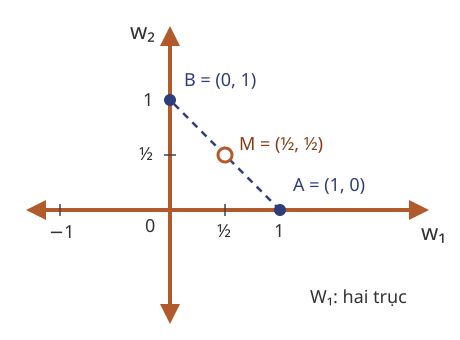
Trung điểm $M$ của hai điểm thuộc $\mathcal W_1$ lại không thuộc $\mathcal W_1$.
$d=2$, $k=1$: $\mathcal W_1=\{w:\|w\|_0\le 1\}$ là hợp của hai trục.
$A=(1,0)$, $B=(0,1)$: mỗi điểm có 1 hệ số khác 0, thuộc $\mathcal W_1$.
$M=(A+B)/2=(0{,}5;\,0{,}5)$: có 2 hệ số khác 0, $M\notin \mathcal W_1$.
Kết luận: $\mathcal W_1$ không lồi.
Mục tiêu $H$ lồi. Bước 3 của quy trình chứng nhận, tính lồi của tập khả thi, được kiểm tra cho ràng buộc $\|w\|_0\le k$, trước hết trên trường hợp nhỏ nhất vẽ được.
Với $d=2$ và $k=1$, tập $\mathcal W_1=\{w:\|w\|_0\le1\}$ gồm các vector có nhiều nhất một thành phần khác 0, tức hợp của hai trục tọa độ. Trên hình, $\mathcal W_1$ là hai trục; điểm $A=(1,0)$ và $B=(0,1)$ nằm trên hai trục nên thuộc $\mathcal W_1$. Trung điểm $M=(0{,}5;\,0{,}5)$ có hai thành phần khác 0, nằm ngoài cả hai trục. Một tập lồi phải chứa đoạn nối hai điểm bất kỳ của nó, nên $\mathcal W_1$ không lồi.
Khái quát cho mọi $1\le k<d$ (Mệnh đề 02.46): chọn hai vector có tập chỉ số khác 0 lần lượt là $S_1=\{1,\ldots,k\}$ và $S_2=\{1,\ldots,k-1\}\cup\{k+1\}$, mọi hệ số trên tập bằng 1. Mỗi vector dùng đúng $k$ đặc trưng, còn trung điểm có hệ số 1 tại $k-1$ vị trí chung và hệ số $1/2$ tại hai vị trí riêng, nên dùng $k+1$ đặc trưng. Giữ hệ số chặn bằng 0 ở cả hai phương án thì trung điểm vẫn vi phạm, nên tập khả thi theo $(w,w_0)$ không lồi. Hai trường hợp bị loại đều lồi: $\mathcal W_0=\{0\}$, $\mathcal W_d=\mathbb R^d$. Mục tiêu $H$ lồi nhưng miền không lồi, nên bài toán giới hạn số đặc trưng không phải bài toán lồi.
Miền không lồi không đưa được về một lớp lồi bằng các phép biến đổi đã học; lựa chọn còn lại là thay ràng buộc đếm bằng một số hạng phạt lồi trong hàm mục tiêu.
Thay bằng số hạng phạt chuẩn một
Nhu cầu: vừa giữ mất mát nhỏ, vừa khuyến khích hệ số bằng 0.
$\min_{w,w_0}\ H(w,w_0)+\lambda\|w\|_1$, $\lambda\ge 0$ chọn trước; $w,w_0$ tự do
$H$ và chuẩn một đều lồi, nên mục tiêu lồi.
Vector $\|w\|_1$ Số hệ số khác 0
$(2,0)$ 2 1 $(1,1)$ 2 2
Mô hình thay thế lồi; không bảo đảm dùng tối đa $k$ đặc trưng.
Ràng buộc $\|w\|_0\le k$ làm miền không lồi. Một số hạng phạt lồi thay cho ràng buộc đó; cần chứng minh bài toán có phạt biến đổi được thành LP và kiểm tra mô hình thay thế có giữ yêu cầu giới hạn số đặc trưng hay không.
Mục tiêu $H(w,w_0)+\lambda\|w\|_1$ lồi vì là tổng hai hàm lồi. Bảng cho hai vector $(2,0)$ và $(1,1)$ có cùng chuẩn một bằng 2 nhưng số hệ số khác 0 là 1 và 2: chuẩn một đo độ lớn, còn $\|w\|_0$ đếm số thành phần được dùng. Biến đổi thành LP: thêm $\xi_i\ge0$, $\xi_i\ge1-y_i(w^Tu_i+w_0)$ cho từng mẫu và $v_j\ge w_j$, $v_j\ge-w_j$ cho từng thành phần của $w$; mục tiêu $\sum_i\xi_i+\lambda\sum_jv_j$. Theo Định lý 02.15, hai bài toán cùng giá trị tối ưu và khối $(w,w_0)$ của nghiệm LP là nghiệm của bài toán có phạt. Phép khôi phục này chỉ dành cho bài toán có phạt; bài toán có ràng buộc đếm phải được kiểm tra riêng.
Phản ví dụ cho ô kết luận (Ví dụ 02.29): bốn mẫu $u_1=(1,0)$, $y_1=1$; $u_2=(-1,0)$, $y_2=-1$; $u_3=(0,1)$, $y_3=1$; $u_4=(0,-1)$, $y_4=-1$. Theo từng tọa độ $j$, cặp mẫu đối xứng cho tổng hai số hạng bản lề ít nhất $2\max(0,1-w_j)$. Xét ba trường hợp $w_j<0$, $0\le w_j\le1$, $w_j>1$ được $2\max(0,1-w_j)+|w_j|\ge1$, dấu bằng chỉ khi $w_j=1$. Với $\lambda=1$, suy ra $H+\|w\|_1\ge2$, đạt duy nhất tại $w=(1,1)$, $w_0=0$. Nghiệm có hai hệ số khác 0, vi phạm giới hạn $k=1$. Nguồn: Boyd và Vandenberghe (2004), Convex Optimization , §6.2, tr. 304–305 và §6.3.2, tr. 306–310.
Phản ví dụ bốn mẫu và số hạng phạt chuẩn một là dữ kiện cho ba câu hỏi kiểm tra về miền khả thi, bảo đảm của số hạng phạt và cách đánh giá nghiệm.
Bài tập: biến thể giới hạn số đặc trưng
Câu hỏi:
Thay ràng buộc đếm bằng $|w_1|+|w_2|\le 2$: tập khả thi có lồi không? Điểm $(1,1)$ có được phép?
Phạt $\lambda>0$ có bảo đảm $\|w\|_0\le 1$ không?
Tìm được nghiệm $(w,w_0)$ của bài toán có phạt: cần kiểm tra gì ở bài toán gốc?
Ba câu hỏi kiểm tra ba năng lực của bài trên biến thể giới hạn số đặc trưng: nhận dạng tập khả thi, đọc đúng bảo đảm của một mô hình thay thế, và đánh giá nghiệm theo bài toán gốc.
Gợi ý: vẽ tập $|w_1|+|w_2|\le2$ trên mặt phẳng $(w_1,w_2)$; dùng phản ví dụ bốn mẫu đối xứng với $\lambda=1$; tách giá trị có phạt khỏi mất mát $H$ và số lỗi.
Nguồn: câu 2 là Ví dụ 02.29; câu 3 theo Nhận xét 02.47 và dòng "thay ràng buộc bằng số hạng phạt" của Nhận xét 02.43.
Bài tập: biến thể giới hạn số đặc trưng
Lời giải:
$|w_1|+|w_2|\le2$ là tập mức dưới của chuẩn một nên lồi; $(1,1)$ được phép dù dùng 2 đặc trưng.
Không: với bốn mẫu đối xứng và $\lambda=1$, nghiệm duy nhất $w=(1,1)$, $w_0=0$ có 2 hệ số khác 0.
Đếm số đặc trưng của $w$; tính lại $H(w,w_0)$ và số lỗi theo bài toán gốc.
Câu 1: tập $\{w:|w_1|+|w_2|\le2\}$ là hình thoi tâm gốc, tập mức dưới của chuẩn một, nên lồi. Điểm $(1,1)$ có $|w_1|+|w_2|=2$ nên được phép, dù nó dùng 2 đặc trưng: giới hạn chuẩn một lồi nhưng không kiểm soát số đặc trưng. Câu 2: không. Với bốn mẫu và $\lambda=1$, nghiệm của $H+\|w\|_1$ là $w=(1,1)$, $w_0=0$, có 2 hệ số khác 0, vi phạm $\|w\|_0\le1$ (Ví dụ 02.29).
Câu 3: cần đếm số đặc trưng thực dùng của $w$, rồi đánh giá lại mất mát $H(w,w_0)$ và số lỗi theo bài toán gốc. Hai giá trị $H$ và $H+\lambda\|w\|_1$ không cùng thước đo. Nếu số đặc trưng vượt $k$, Boyd và Vandenberghe (2004, tr. 310) tăng $\lambda$ tới giá trị nhỏ nhất cho đúng $k$ hệ số khác 0 rồi giải lại chỉ với các đặc trưng đó; cách này không bảo đảm tối ưu cho bài toán có ràng buộc đếm (Nhận xét 02.47).
Các kết quả của sáu phần được gom vào bảng kết quả, giả thiết và công thức của tổng kết.
Tổng kết bài giảng
Kết quả Giả thiết không được bỏ Công thức hoặc thuật toán
LP lồi, kể cả trị tuyệt đối Affine; $|r_i|$ có hệ số $\ge0$ trong $\min$ biến phụ $-t\le Xw-y\le t$ QP, QCQP lồi $P_0\succeq0$ cho mục tiêu, $P_i\succeq0$ cho $i\ge1$ $v^TP_iv\ge0\ \forall v$ GP lồi sau đổi biến Biến dương; $f_i\le1$ tổng đơn thức dương, $g_j=1$ đơn thức $z=\log x;\ x^*=e^{z^*}$ Thay thế: cận trên $\min E$; nới lỏng: cận dưới $p^*_{\mathcal F}$ $E(\theta)\le H(\theta)\ \forall\theta;$ $\mathcal F\subseteq\tilde{\mathcal F}$; phương án nguyên khả thi $\min E\le\min H$; $p^*_{\tilde{\mathcal F}}\le p^*_{\mathcal F}\le$ chi phí phương án
Đọc thêm: Boyd–Vandenberghe (2004), chương 4; §6.2; §6.3.2.
Bảng tổng kết đọc theo sáu mục tiêu học tập. Cột kết quả gọi tên bốn nhóm LP, QP và QCQP, quy hoạch hình học, xấp xỉ lồi (mục tiêu 1–4); cột công thức ghi biến phụ $-t\le Xw-y\le t$, phép đổi biến $z=\log x$, hàm thay thế và nới lỏng (mục tiêu 2, 4, 5); cột giả thiết ghi điều kiện mà nếu bỏ thì kết quả không còn đúng (mục tiêu 6).
Hàng LP: biến liên tục; trị tuyệt đối đứng trong mục tiêu cực tiểu với hệ số không âm, hoặc ở vế trái của ràng buộc dạng $\le$. Khi cực đại $\|r\|_1$ hoặc gặp ràng buộc $|r_i|\ge c$, biến phụ không cho bài toán tương đương. Hàng QP, QCQP: nếu một $P_i$ có giá trị riêng âm thì khung chứng nhận không còn áp dụng, và tập khả thi có thể không lồi, như ràng buộc $\|w\|_2^2\ge\Delta^2$. Hàng quy hoạch hình học: biến bằng 0 nằm ngoài miền của $x=e^z$, và chiều $\ge$ của tổng đơn thức dương ra ngoài dạng chuẩn.
Hàng xấp xỉ: $E(\theta)\le H(\theta)$ tại mọi $\theta$ chỉ cho $\min E\le\min H$, không cho cùng tập nghiệm. Tập khả thi gốc nằm trong tập nới lỏng nên giá trị tối ưu LP không lớn hơn $p^*_{\mathcal F}$; một phương án nguyên khả thi cho cận trên. Thay ràng buộc đếm bằng số hạng phạt chuẩn một không giữ ràng buộc gốc. Nghiệm của bài toán thay thế hay bài toán nới lỏng phải được đánh giá lại theo bài toán gốc.
Mỗi mô hình hoàn chỉnh gồm sáu thành phần: dữ liệu, biến, mục tiêu, ràng buộc, chứng nhận và ý nghĩa nghiệm. Sai thường gặp ở thành phần cuối: giá trị của $H$ bị đọc thành số lỗi, nghiệm phân số bị đọc thành phương án mua. Câu hỏi tự kiểm tra nằm ở các trang bài tập cuối mỗi phần; bài tập thêm ở §11 của ghi chú và tệp bài tập. Nguồn đọc thêm: Boyd và Vandenberghe (2004), Convex Optimization , chương 4 cho các lớp bài toán; §6.2 và §6.3.2 cho xấp xỉ theo chuẩn một và chính quy hóa; Murphy (2022), §11.3–11.4 cho hồi quy ridge và LASSO.